American Baseball League Stats
Click any column header to sort (numbers sort high to low first; click again to flip). Tables start with qualified players only (3.1 PA or 1 IP per team game); tick the box to include everyone. Top-10 leaderboards are on the League Leaders page.
163 qualified, 152 more below the 3.1 PA/G line.
163 qualified, 152 more below the 3.1 PA/G line.
OPS+ = 100 × (OBP / league OBP + SLG / league SLG − 1); ERA+ = 100 × league ERA / ERA. Both use this league's 2002 totals and are not park-adjusted. FIP = (13 HR + 3 (BB + HBP) − 2 K) / IP + the league constant. WAR, WPA and UBR (baserunning runs) are OOTP's own figures.
68 qualified, 189 more below the 1 IP/G line.
68 qualified, 189 more below the 1 IP/G line.
OPS+ = 100 × (OBP / league OBP + SLG / league SLG − 1); ERA+ = 100 × league ERA / ERA. Both use this league's 2002 totals and are not park-adjusted. FIP = (13 HR + 3 (BB + HBP) − 2 K) / IP + the league constant. WAR, WPA and UBR (baserunning runs) are OOTP's own figures.
Team Batting
| Team | G | PA | R | R/G | H | 2B | 3B | HR | BB | K | SB | CS | AVG | OBP | SLG | OPS | ISO | BB% | K% |
|---|---|---|---|---|---|---|---|---|---|---|---|---|---|---|---|---|---|---|---|
 Anaheim Angels Anaheim Angels | 41 | 1680 | 233 | 5.68 | 466 | 89 | 10 | 46 | 143 | 268 | 50 | 20 | .310 | .372 | .475 | .847 | .165 | 8.5% | 16.0% |
 Austin Violets Austin Violets | 41 | 1606 | 173 | 4.22 | 394 | 83 | 3 | 33 | 152 | 257 | 20 | 15 | .277 | .349 | .409 | .759 | .132 | 9.5% | 16.0% |
| Baltimore Orioles | 41 | 1618 | 187 | 4.56 | 421 | 79 | 7 | 23 | 114 | 250 | 17 | 15 | .289 | .347 | .400 | .747 | .111 | 7.0% | 15.5% |
 Cincinnati Reds Cincinnati Reds | 41 | 1639 | 215 | 5.24 | 421 | 70 | 13 | 58 | 142 | 272 | 41 | 22 | .289 | .357 | .474 | .831 | .185 | 8.7% | 16.6% |
 Cleveland Spiders Cleveland Spiders | 41 | 1660 | 243 | 5.93 | 464 | 83 | 11 | 53 | 114 | 295 | 43 | 17 | .308 | .358 | .483 | .840 | .175 | 6.9% | 17.8% |
 Kansas City Monarchs Kansas City Monarchs | 41 | 1628 | 248 | 6.05 | 434 | 88 | 11 | 52 | 151 | 237 | 27 | 23 | .301 | .370 | .485 | .856 | .184 | 9.3% | 14.6% |
| Las Vegas Gamblers | 41 | 1678 | 228 | 5.56 | 450 | 91 | 8 | 43 | 141 | 232 | 45 | 22 | .303 | .367 | .461 | .829 | .159 | 8.4% | 13.8% |
| Mexico City Golden Eagles | 41 | 1639 | 211 | 5.15 | 426 | 76 | 8 | 50 | 150 | 262 | 41 | 15 | .291 | .359 | .456 | .815 | .165 | 9.2% | 16.0% |
 Minnesota Loons Minnesota Loons | 41 | 1700 | 255 | 6.22 | 465 | 90 | 7 | 54 | 141 | 262 | 26 | 9 | .306 | .372 | .481 | .853 | .175 | 8.3% | 15.4% |
 Montreal Royeaux Montreal Royeaux | 41 | 1620 | 208 | 5.07 | 403 | 68 | 8 | 52 | 171 | 273 | 39 | 25 | .283 | .363 | .452 | .815 | .169 | 10.6% | 16.9% |
 Nashville Stars Nashville Stars | 41 | 1630 | 230 | 5.61 | 429 | 99 | 9 | 51 | 146 | 325 | 30 | 21 | .293 | .360 | .478 | .838 | .185 | 9.0% | 19.9% |
 New Orleans Athletics New Orleans Athletics | 41 | 1659 | 235 | 5.73 | 419 | 93 | 10 | 29 | 153 | 233 | 33 | 17 | .284 | .356 | .420 | .776 | .136 | 9.2% | 14.0% |
 New York Knights New York Knights | 41 | 1658 | 226 | 5.51 | 438 | 66 | 15 | 42 | 129 | 293 | 61 | 18 | .294 | .354 | .443 | .797 | .149 | 7.8% | 17.7% |
 Pittsburgh Pirates Pittsburgh Pirates | 41 | 1640 | 241 | 5.88 | 433 | 81 | 1 | 53 | 126 | 245 | 45 | 16 | .293 | .350 | .457 | .807 | .164 | 7.7% | 14.9% |
 Portland Beavers Portland Beavers | 41 | 1656 | 244 | 5.95 | 452 | 85 | 8 | 45 | 153 | 292 | 45 | 17 | .305 | .373 | .465 | .838 | .159 | 9.2% | 17.6% |
 Salt Lake Bees Salt Lake Bees | 41 | 1625 | 232 | 5.66 | 445 | 86 | 15 | 42 | 138 | 245 | 27 | 19 | .308 | .373 | .475 | .848 | .167 | 8.5% | 15.1% |
 San Diego Padres San Diego Padres | 41 | 1615 | 251 | 6.12 | 432 | 80 | 3 | 47 | 162 | 248 | 21 | 25 | .303 | .375 | .463 | .837 | .159 | 10.0% | 15.4% |
 San Juan Coquis San Juan Coquis | 41 | 1623 | 218 | 5.32 | 395 | 73 | 11 | 45 | 160 | 266 | 48 | 20 | .277 | .355 | .438 | .793 | .161 | 9.9% | 16.4% |
 Southside Black Sox Southside Black Sox | 41 | 1652 | 221 | 5.39 | 435 | 67 | 2 | 47 | 148 | 290 | 61 | 22 | .296 | .364 | .440 | .804 | .144 | 9.0% | 17.6% |
 Tampa Bay Rays Tampa Bay Rays | 41 | 1579 | 175 | 4.27 | 371 | 56 | 5 | 32 | 125 | 259 | 54 | 20 | .260 | .322 | .374 | .695 | .114 | 7.9% | 16.4% |
| League average | 41.0 | 1640.2 | 223.7 | 5.46 | 429.6 | 80.2 | 8.2 | 44.9 | 142.9 | 265.2 | 38.7 | 18.9 | .294 | .360 | .452 | .812 | .158 | 8.7% | 16.2% |
Team Pitching
| Team | W | L | ERA | FIP | SP ERA | RP ERA | IP | H | R | ER | HR | BB | K | WHIP | K/9 | BB/9 | HR/9 | Opp AVG | BABIP | GB% | QS | SV | BS |
|---|---|---|---|---|---|---|---|---|---|---|---|---|---|---|---|---|---|---|---|---|---|---|---|
| Anaheim Angels | 21 | 20 | 4.69 | 5.29 | 4.73 | 4.62 | 366.1 | 432 | 199 | 191 | 46 | 161 | 275 | 1.62 | 6.8 | 4.0 | 1.13 | .292 | .332 | 48.1% | 16 | 12 | 4 |
| Austin Violets | 19 | 22 | 4.72 | 4.77 | 4.35 | 5.47 | 362.1 | 424 | 212 | 190 | 39 | 128 | 268 | 1.52 | 6.7 | 3.2 | 0.97 | .291 | .332 | 46.8% | 17 | 10 | 4 |
| Baltimore Orioles | 18 | 23 | 4.33 | 4.93 | 4.32 | 4.37 | 363.2 | 367 | 186 | 175 | 48 | 107 | 251 | 1.30 | 6.2 | 2.6 | 1.19 | .260 | .286 | 48.3% | 19 | 10 | 5 |
| Cincinnati Reds | 17 | 24 | 5.33 | 5.88 | 5.35 | 5.29 | 361.1 | 450 | 235 | 214 | 61 | 141 | 237 | 1.64 | 5.9 | 3.5 | 1.52 | .303 | .326 | 47.8% | 13 | 9 | 6 |
| Cleveland Spiders | 23 | 18 | 4.90 | 5.22 | 5.35 | 4.07 | 364.0 | 410 | 213 | 198 | 50 | 145 | 282 | 1.52 | 7.0 | 3.6 | 1.24 | .284 | .321 | 47.0% | 14 | 11 | 8 |
| Kansas City Monarchs | 23 | 18 | 5.62 | 5.42 | 5.75 | 5.41 | 363.2 | 421 | 246 | 227 | 50 | 147 | 261 | 1.56 | 6.5 | 3.6 | 1.24 | .288 | .319 | 48.1% | 13 | 15 | 5 |
| Las Vegas Gamblers | 21 | 20 | 5.79 | 4.86 | 5.47 | 6.31 | 363.2 | 475 | 258 | 234 | 46 | 136 | 304 | 1.68 | 7.5 | 3.4 | 1.14 | .308 | .357 | 50.9% | 14 | 11 | 3 |
| Mexico City Golden Eagles | 19 | 22 | 5.07 | 5.48 | 4.63 | 5.79 | 364.0 | 431 | 219 | 205 | 50 | 155 | 244 | 1.61 | 6.0 | 3.8 | 1.24 | .295 | .324 | 51.0% | 16 | 16 | 5 |
| Minnesota Loons | 22 | 19 | 5.28 | 5.30 | 4.79 | 6.11 | 368.1 | 462 | 244 | 216 | 45 | 163 | 263 | 1.70 | 6.4 | 4.0 | 1.10 | .306 | .343 | 48.9% | 14 | 12 | 8 |
| Montreal Royeaux | 24 | 17 | 4.45 | 4.68 | 4.24 | 5.03 | 365.2 | 393 | 198 | 181 | 31 | 146 | 259 | 1.47 | 6.4 | 3.6 | 0.76 | .275 | .315 | 52.0% | 21 | 14 | 6 |
| Nashville Stars | 16 | 25 | 5.54 | 5.19 | 5.96 | 4.80 | 357.1 | 406 | 236 | 220 | 42 | 182 | 300 | 1.65 | 7.6 | 4.6 | 1.06 | .286 | .333 | 53.5% | 14 | 8 | 8 |
| New Orleans Athletics | 20 | 21 | 5.89 | 5.32 | 6.25 | 5.41 | 362.1 | 457 | 249 | 237 | 45 | 174 | 285 | 1.74 | 7.1 | 4.3 | 1.12 | .311 | .356 | 48.7% | 11 | 12 | 11 |
| New York Knights | 15 | 26 | 5.75 | 5.58 | 5.90 | 5.53 | 361.1 | 429 | 257 | 231 | 49 | 179 | 272 | 1.68 | 6.8 | 4.5 | 1.22 | .299 | .334 | 49.9% | 9 | 7 | 7 |
| Pittsburgh Pirates | 20 | 21 | 5.55 | 4.74 | 5.87 | 4.87 | 363.1 | 457 | 240 | 224 | 30 | 138 | 234 | 1.64 | 5.8 | 3.4 | 0.74 | .308 | .344 | 52.2% | 15 | 11 | 6 |
| Portland Beavers | 24 | 17 | 4.86 | 5.58 | 5.96 | 3.42 | 363.1 | 418 | 214 | 196 | 48 | 158 | 241 | 1.59 | 6.0 | 3.9 | 1.19 | .291 | .320 | 51.6% | 14 | 13 | 5 |
| Salt Lake Bees | 20 | 21 | 5.92 | 5.66 | 7.21 | 4.24 | 354.0 | 444 | 249 | 233 | 51 | 153 | 243 | 1.69 | 6.2 | 3.9 | 1.30 | .306 | .335 | 47.5% | 8 | 11 | 4 |
| San Diego Padres | 24 | 17 | 4.33 | 4.56 | 4.12 | 4.87 | 361.1 | 383 | 190 | 174 | 44 | 97 | 291 | 1.33 | 7.2 | 2.4 | 1.10 | .271 | .310 | 49.8% | 24 | 8 | 3 |
| San Juan Coquis | 20 | 21 | 5.88 | 5.04 | 5.29 | 7.17 | 359.2 | 494 | 254 | 235 | 52 | 107 | 267 | 1.67 | 6.7 | 2.7 | 1.30 | .323 | .362 | 46.6% | 16 | 7 | 7 |
| Southside Black Sox | 26 | 15 | 4.19 | 4.37 | 4.33 | 3.90 | 369.2 | 427 | 181 | 172 | 29 | 111 | 245 | 1.46 | 6.0 | 2.7 | 0.71 | .287 | .325 | 51.5% | 20 | 14 | 5 |
| Tampa Bay Rays | 18 | 23 | 4.67 | 4.85 | 4.61 | 4.77 | 362.2 | 413 | 194 | 188 | 41 | 131 | 282 | 1.50 | 7.0 | 3.3 | 1.02 | .284 | .327 | 49.9% | 18 | 12 | 6 |
| League average | 20.5 | 20.5 | 5.13 | 5.13 | 5.17 | 5.06 | 363.0 | 429.6 | 223.7 | 207.1 | 44.9 | 142.9 | 265.2 | 1.58 | 6.6 | 3.5 | 1.11 | .294 | .330 | 49.5% | 15.3 | 11.2 | 5.8 |
Team Fielding
| Team | G | TC | PO | A | E | DP | FPct | SB att | CS | CS% | PB |
|---|---|---|---|---|---|---|---|---|---|---|---|
| Anaheim Angels | 41 | 1504 | 1099 | 389 | 16 | 24 | .989 | 62 | 20 | 32.3% | 4 |
| Austin Violets | 41 | 1503 | 1087 | 386 | 30 | 30 | .980 | 61 | 17 | 27.9% | 4 |
| Baltimore Orioles | 41 | 1507 | 1090 | 396 | 21 | 29 | .986 | 49 | 14 | 28.6% | 4 |
| Cincinnati Reds | 41 | 1507 | 1084 | 392 | 31 | 36 | .979 | 44 | 16 | 36.4% | 8 |
| Cleveland Spiders | 41 | 1487 | 1092 | 373 | 22 | 27 | .985 | 55 | 19 | 34.5% | 2 |
| Kansas City Monarchs | 41 | 1515 | 1091 | 392 | 32 | 35 | .979 | 39 | 17 | 43.6% | 3 |
| Las Vegas Gamblers | 41 | 1492 | 1091 | 371 | 30 | 17 | .980 | 56 | 13 | 23.2% | 4 |
| Mexico City Golden Eagles | 41 | 1532 | 1092 | 413 | 27 | 32 | .982 | 68 | 25 | 36.8% | 4 |
| Minnesota Loons | 41 | 1545 | 1105 | 399 | 41 | 24 | .973 | 74 | 25 | 33.8% | 5 |
| Montreal Royeaux | 41 | 1546 | 1097 | 419 | 30 | 30 | .981 | 51 | 25 | 49.0% | 6 |
| Nashville Stars | 41 | 1514 | 1072 | 410 | 32 | 28 | .979 | 54 | 18 | 33.3% | 3 |
| New Orleans Athletics | 41 | 1488 | 1086 | 383 | 19 | 29 | .987 | 69 | 20 | 29.0% | 6 |
| New York Knights | 41 | 1541 | 1084 | 422 | 35 | 29 | .977 | 72 | 31 | 43.1% | 6 |
| Pittsburgh Pirates | 41 | 1562 | 1090 | 441 | 31 | 23 | .980 | 48 | 16 | 33.3% | 4 |
| Portland Beavers | 41 | 1540 | 1090 | 428 | 22 | 39 | .986 | 38 | 19 | 50.0% | 2 |
| Salt Lake Bees | 41 | 1469 | 1062 | 377 | 30 | 26 | .980 | 67 | 16 | 23.9% | 1 |
| San Diego Padres | 41 | 1489 | 1084 | 385 | 20 | 25 | .987 | 56 | 15 | 26.8% | 0 |
| San Juan Coquis | 41 | 1469 | 1079 | 365 | 25 | 19 | .983 | 57 | 17 | 29.8% | 8 |
| Southside Black Sox | 41 | 1558 | 1109 | 418 | 31 | 28 | .980 | 59 | 18 | 30.5% | 2 |
| Tampa Bay Rays | 41 | 1494 | 1088 | 379 | 27 | 27 | .982 | 73 | 17 | 23.3% | 1 |
| League average | 41.0 | 1513.1 | 1088.6 | 396.9 | 27.6 | 27.9 | .982 | 57.6 | 18.9 | 32.8% | 3.9 |
Team totals come from OOTP's team stat tables. FIP uses this league's 2002 constant (league FIP equals league ERA). SP/RP ERA split the staff into starters and bullpen. GB% is ground balls over ground plus fly balls as OOTP records them. The League average row uses playing-time-weighted rates from league totals; counting stats are the per-team average.
Team Batted Ball
| Team | BBE | LA |
|---|---|---|
| Anaheim Angels | 1257 | 16.8 |
| Austin Violets | 1184 | 18.2 |
| Baltimore Orioles | 1234 | 16.9 |
| Cincinnati Reds | 1207 | 17.1 |
| Cleveland Spiders | 1239 | 18.2 |
| Kansas City Monarchs | 1224 | 18.5 |
| Las Vegas Gamblers | 1284 | 17.9 |
| Mexico City Golden Eagles | 1217 | 17.7 |
| Minnesota Loons | 1274 | 17.4 |
| Montreal Royeaux | 1162 | 18.1 |
| Nashville Stars | 1149 | 17.5 |
| New Orleans Athletics | 1256 | 15.9 |
| New York Knights | 1219 | 16.6 |
| Pittsburgh Pirates | 1255 | 18.0 |
| Portland Beavers | 1199 | 16.6 |
| Salt Lake Bees | 1222 | 18.6 |
| San Diego Padres | 1196 | 16.4 |
| San Juan Coquis | 1179 | 17.9 |
| Southside Black Sox | 1199 | 17.3 |
| Tampa Bay Rays | 1186 | 17.6 |
| League average | 1217.1 | 17.5 |
Team Batted Ball Allowed
| Team | BBE | LA |
|---|---|---|
| Anaheim Angels | 1221 | 18.0 |
| Austin Violets | 1212 | 17.5 |
| Baltimore Orioles | 1171 | 18.6 |
| Cincinnati Reds | 1260 | 18.5 |
| Cleveland Spiders | 1181 | 18.6 |
| Kansas City Monarchs | 1223 | 18.2 |
| Las Vegas Gamblers | 1250 | 17.6 |
| Mexico City Golden Eagles | 1232 | 17.4 |
| Minnesota Loons | 1268 | 17.1 |
| Montreal Royeaux | 1187 | 16.6 |
| Nashville Stars | 1138 | 16.2 |
| New Orleans Athletics | 1211 | 17.6 |
| New York Knights | 1194 | 17.0 |
| Pittsburgh Pirates | 1278 | 16.9 |
| Portland Beavers | 1217 | 16.9 |
| Salt Lake Bees | 1228 | 17.7 |
| San Diego Padres | 1143 | 17.2 |
| San Juan Coquis | 1281 | 17.8 |
| Southside Black Sox | 1260 | 16.3 |
| Tampa Bay Rays | 1187 | 17.3 |
| League average | 1217.1 | 17.5 |
Batted ball: every ball in play the team hit (or allowed) with a launch-angle reading, pooled. LA = average launch angle in degrees, a fly-ball versus ground-ball tendency (higher means more fly balls). The League average row pools every such ball in the league (BBE is the per-team average).
Fewest errors (qualified fielders)
- 0Jim Thome MEXC
- 0
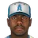
Marquis Grissom LAA - 0Austin Kearns LAA
- 0Joe Randa SBS
- 0Darren Lewis BAL
- 0
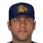
Victor I. Diaz MEXC - 0
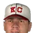
Larry Walker KCM - 0
 J.J. Davis TBR
J.J. Davis TBR
Best fielding % (non-pitchers)
- 1.000Jim Thome MEXC
- 1.000Marquis Grissom LAA
- 1.000Austin Kearns LAA
- 1.000Joe Randa SBS
- 1.000Darren Lewis BAL
- 1.000Victor I. Diaz MEXC
- 1.000Larry Walker KCM
- 1.000J.J. Davis TBR
Catcher caught-stealing %
- 57.7%
 Angel Pena PoBe
Angel Pena PoBe - 50.0%
 Bobby Estalella MON
Bobby Estalella MON - 44.0%Paul Konerko KCM
- 38.9%
 Miguel Ojeda CIN
Miguel Ojeda CIN - 34.3%Jorge Fabregas NASH
- 34.1%
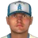
Mike Sweeney LAA - 34.0%Josh Phelps CLE
- 33.3%Shea Hillenbrand MIN
Catcher framing runs
- 2.0Shea Hillenbrand MIN
- 1.9
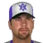
Mike Piazza AUS - 1.5Mike Sweeney LAA
- 1.5
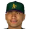
Wiki Gonzalez NOLA - 1.2
 Robert Fick SDP
Robert Fick SDP - 0.9Ivan Rodriguez SBS
- 0.8Jason Kendall LVG
- 0.7Jorge Fabregas NASH
Outfield arm runs
- 7.3
 Chad Meyers LVG
Chad Meyers LVG - 6.1
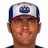
Alex Escobar SJC - 6.0
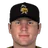
Gabe Gross SLB - 5.6Dave McCarty CIN
- 5.1J.J. Davis TBR
- 4.5Andy Barkett LVG
- 4.4Victor I. Diaz MEXC
- 4.3
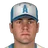
Scott Podsednik LAA
Double plays, 2B/SS
- 29Fernando Vina KCM
- 28Rafael Furcal PoBe
- 25Tony Graffanino MEXC
- 25
 Nick Punto PoBe
Nick Punto PoBe - 22
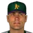
Tim Bogar NOLA - 21Jeff Branson CIN
- 20Placido Polanco CLE
- 20Rey Ordonez BAL
Zone rating, C
- 2.7Angel Pena PoBe
- 1.8Paul Konerko KCM
- 1.2Jorge Fabregas NASH
- 1.0Bobby Estalella MON
- 0.9Josh Phelps CLE
- 0.8Miguel Ojeda CIN
- 0.7Shea Hillenbrand MIN
- 0.5Ivan Rodriguez SBS
Zone rating, 1B
- 2.5Travis Lee KCM
- 1.7Nick Johnson SBS
- 1.7Jim Thome MEXC
- 1.7
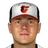
Frank Catalanotto BAL - 1.6Mark Grace AUS
- 1.3
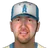
Jason Lane LAA - 1.1Tino Martinez CLE
- 0.4
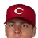
Mark Teixeira CIN
Zone rating, 2B
- 9.8Tony Graffanino MEXC
- 7.0
 John Valentin SLB
John Valentin SLB - 6.3
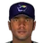
Ramon Santiago TBR - 5.4
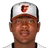
Juan Uribe BAL - 5.4Carlos Guillen NYK
- 4.8Rafael Furcal PoBe
- 4.1Jose Valentin LAA
- 1.0Mike Bordick LVG
Zone rating, SS
- 8.2Neifi Perez MEXC
- 8.0Rey Ordonez BAL
- 4.5Tim Bogar NOLA
- 1.2
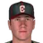
Andy Sheets CLE - 0.2
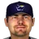
Chad Hermansen TBR - -0.1
 Alex Cintron SLB
Alex Cintron SLB - -0.4Tony Womack SBS
- -0.6
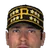
Nomar Garciaparra PIT
Zone rating, 3B
- 4.0
 Alex S. Gonzalez PoBe
Alex S. Gonzalez PoBe - 3.8
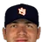
Eric Chavez NYK - 3.7
 Scott Rolen SLB
Scott Rolen SLB - 2.2
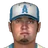
Cliff Brumbaugh LAA - 1.8
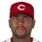
Adrian Beltre CIN - 1.4Joe Randa SBS
- 0.6
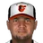
Carlos Lee BAL - -0.2
 Mike Lamb LVG
Mike Lamb LVG
Zone rating, LF
- 4.2
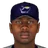
Juan Pierre TBR - 3.1Marquis Grissom LAA
- 2.9
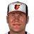
John Vander Wal BAL - 2.3Jose Cruz Jr. AUS
- 1.7Lance Berkman NYK
- 1.5Luis Gonzalez KCM
- 1.4Bill Selby SLB
- 1.3
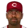
Doug Glanville CIN
Zone rating, CF
- 7.4
 Jay Payton AUS
Jay Payton AUS - 7.2Darren Lewis BAL
- 5.6
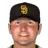
Dustan Mohr SDP - 3.6
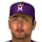
Richard Hidalgo MON - 3.5Rickey Henderson MIN
- 2.8
 Alex Sanchez TBR
Alex Sanchez TBR - -0.2
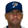
Marlon Byrd PoBe - -0.6Jason Ellison SBS
Zone rating, RF
- 5.0
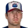
J.D. Drew SJC - 4.7Chris Singleton NYK
- 3.6Austin Kearns LAA
- 3.3
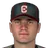
Eric Byrnes CLE - 3.0
 Jason Michaels SLB
Jason Michaels SLB - 2.3
 Milton Bradley NASH
Milton Bradley NASH - -1.3Gabe Kapler SDP
- -2.3
 Ross Gload PoBe
Ross Gload PoBe
| Player | Team | Pos | G | GS | Inn | TC | PO | A | E | DP | Fld% | RF/9 | ZR | Arm | Framing | SB | CS | CS% | PB |
|---|---|---|---|---|---|---|---|---|---|---|---|---|---|---|---|---|---|---|---|
| Nick Johnson | SBS | 1B | 40 | 39 | 350.0 | 378 | 345 | 31 | 2 | 26 | .995 | 9.67 | 1.7 | - | - | - | - | - | - |
| Ty Wigginton | NYK | 1B | 40 | 40 | 348.1 | 352 | 323 | 26 | 3 | 23 | .991 | 9.02 | -0.8 | - | - | - | - | - | - |
| Tino Martinez | CLE | 1B | 39 | 39 | 342.0 | 326 | 302 | 22 | 2 | 20 | .994 | 8.53 | 1.1 | - | - | - | - | - | - |
| Juan Rivera | MIN | RF | 38 | 38 | 341.1 | 84 | 67 | 12 | 5 | 1 | .940 | 2.08 | -3.2 | 3.1 | - | - | - | - | - |
| David Ortiz | MIN | 1B | 39 | 38 | 341.1 | 347 | 322 | 23 | 2 | 21 | .994 | 9.10 | 0.1 | - | - | - | - | - | - |
| Jim Thome | MEXC | 1B | 40 | 39 | 341.0 | 354 | 334 | 20 | 0 | 25 | 1.000 | 9.34 | 1.7 | - | - | - | - | - | - |
| Placido Polanco | CLE | 2B | 40 | 38 | 340.0 | 180 | 70 | 109 | 1 | 20 | .994 | 4.74 | 0.7 | - | - | - | - | - | - |
| J.D. Drew | SJC | RF | 39 | 39 | 337.2 | 82 | 77 | 4 | 1 | 0 | .988 | 2.16 | 5.0 | -0.5 | - | - | - | - | - |
| Nick Swisher | NOLA | 1B | 39 | 39 | 337.1 | 313 | 296 | 15 | 2 | 22 | .994 | 8.30 | -1.7 | - | - | - | - | - | - |
| Carlos Pena | NASH | 1B | 39 | 39 | 337.1 | 336 | 300 | 34 | 2 | 24 | .994 | 8.91 | -0.6 | - | - | - | - | - | - |
| Andy Sheets | CLE | SS | 38 | 38 | 337.0 | 179 | 76 | 97 | 6 | 16 | .966 | 4.62 | 1.2 | - | - | - | - | - | - |
| Carlos Lee | BAL | 3B | 38 | 38 | 336.2 | 99 | 26 | 69 | 4 | 7 | .960 | 2.54 | 0.6 | - | - | - | - | - | - |
| Mark Teixeira | CIN | 1B | 39 | 39 | 336.0 | 340 | 318 | 21 | 1 | 28 | .997 | 9.08 | 0.4 | - | - | - | - | - | - |
| Rey Ordonez | BAL | SS | 39 | 38 | 335.2 | 185 | 78 | 105 | 2 | 20 | .989 | 4.91 | 8.0 | - | - | - | - | - | - |
| J.T. Snow | PoBe | 1B | 38 | 38 | 335.1 | 361 | 334 | 25 | 2 | 36 | .994 | 9.64 | -0.9 | - | - | - | - | - | - |
| Marlon Byrd | PoBe | CF | 39 | 38 | 335.1 | 100 | 99 | 0 | 1 | 0 | .990 | 2.66 | -0.2 | 4.0 | - | - | - | - | - |
| Tony Graffanino | MEXC | 2B | 38 | 38 | 335.0 | 224 | 86 | 135 | 3 | 25 | .987 | 5.94 | 9.8 | - | - | - | - | - | - |
| Jay Payton | AUS | CF | 38 | 38 | 334.1 | 132 | 121 | 7 | 4 | 0 | .970 | 3.45 | 7.4 | 0.4 | - | - | - | - | - |
| J.J. Hardy | LAA | SS | 38 | 38 | 334.1 | 165 | 48 | 110 | 7 | 14 | .958 | 4.25 | -2.5 | - | - | - | - | - | - |
| Adrian Beltre | CIN | 3B | 38 | 38 | 333.1 | 89 | 31 | 56 | 2 | 6 | .978 | 2.35 | 1.8 | - | - | - | - | - | - |
| Neifi Perez | MEXC | SS | 39 | 37 | 333.0 | 188 | 72 | 114 | 2 | 19 | .989 | 5.03 | 8.2 | - | - | - | - | - | - |
| Mike Lamb | LVG | 3B | 38 | 38 | 332.2 | 106 | 24 | 73 | 9 | 4 | .915 | 2.62 | -0.2 | - | - | - | - | - | - |
| Jeffrey Hammonds | PoBe | LF | 39 | 38 | 332.1 | 83 | 82 | 0 | 1 | 0 | .988 | 2.22 | 1.3 | -1.2 | - | - | - | - | - |
| Nick Punto | PoBe | SS | 38 | 38 | 332.1 | 168 | 65 | 98 | 5 | 25 | .970 | 4.41 | -0.7 | - | - | - | - | - | - |
| Marty Cordova | SJC | LF | 38 | 38 | 331.1 | 78 | 72 | 2 | 4 | 0 | .949 | 2.01 | -2.7 | -0.6 | - | - | - | - | - |
| Luis Gonzalez | KCM | LF | 38 | 37 | 330.0 | 72 | 68 | 2 | 2 | 0 | .972 | 1.91 | 1.5 | 0.0 | - | - | - | - | - |
| Mark Grace | AUS | 1B | 39 | 38 | 329.1 | 312 | 286 | 24 | 2 | 25 | .994 | 8.47 | 1.6 | - | - | - | - | - | - |
| Vladimir Guerrero | CIN | RF | 38 | 37 | 329.1 | 81 | 73 | 6 | 2 | 2 | .975 | 2.16 | -2.4 | 1.2 | - | - | - | - | - |
| Eric Chavez | NYK | 3B | 39 | 38 | 329.1 | 103 | 25 | 77 | 1 | 6 | .990 | 2.79 | 3.8 | - | - | - | - | - | - |
| Fernando Vina | KCM | 2B | 37 | 37 | 328.2 | 181 | 83 | 92 | 6 | 29 | .967 | 4.79 | -6.0 | - | - | - | - | - | - |
| Scott Podsednik | LAA | CF | 37 | 37 | 328.1 | 105 | 104 | 0 | 1 | 0 | .990 | 2.85 | -4.3 | 4.3 | - | - | - | - | - |
| John Vander Wal | BAL | LF | 37 | 37 | 328.0 | 69 | 67 | 1 | 1 | 0 | .986 | 1.87 | 2.9 | -0.6 | - | - | - | - | - |
| Cliff Brumbaugh | LAA | 3B | 38 | 38 | 327.0 | 99 | 29 | 68 | 2 | 6 | .980 | 2.67 | 2.2 | - | - | - | - | - | - |
| Scott Rolen | SLB | 3B | 39 | 38 | 326.0 | 100 | 26 | 72 | 2 | 6 | .980 | 2.71 | 3.7 | - | - | - | - | - | - |
| Brad Fullmer | SLB | 1B | 39 | 39 | 326.0 | 317 | 297 | 19 | 1 | 19 | .997 | 8.72 | -2.1 | - | - | - | - | - | - |
| Chad Meyers | LVG | CF | 37 | 37 | 325.2 | 107 | 103 | 2 | 2 | 0 | .981 | 2.90 | -6.2 | 7.3 | - | - | - | - | - |
| Chris Gomez | NASH | SS | 38 | 38 | 325.1 | 182 | 76 | 101 | 5 | 18 | .973 | 4.90 | -4.0 | - | - | - | - | - | - |
| Jolbert Cabrera | SDP | SS | 38 | 38 | 324.2 | 162 | 64 | 92 | 6 | 13 | .963 | 4.32 | -2.7 | - | - | - | - | - | - |
| Keith Ginter | MIN | 2B | 37 | 37 | 324.1 | 191 | 93 | 94 | 4 | 13 | .979 | 5.19 | -5.4 | - | - | - | - | - | - |
| Gabe Gross | SLB | CF | 38 | 38 | 324.0 | 113 | 109 | 1 | 3 | 0 | .973 | 3.06 | -3.2 | 6.0 | - | - | - | - | - |
| Alex Cintron | SLB | SS | 38 | 38 | 324.0 | 167 | 69 | 94 | 4 | 19 | .976 | 4.53 | -0.1 | - | - | - | - | - | - |
| Marquis Grissom | LAA | LF | 36 | 36 | 322.1 | 67 | 65 | 2 | 0 | 0 | 1.000 | 1.87 | 3.1 | -0.7 | - | - | - | - | - |
| Lance Berkman | NYK | LF | 37 | 37 | 322.1 | 66 | 62 | 0 | 4 | 0 | .939 | 1.73 | 1.7 | -1.7 | - | - | - | - | - |
| Austin Kearns | LAA | RF | 36 | 36 | 322.1 | 83 | 79 | 4 | 0 | 1 | 1.000 | 2.32 | 3.6 | 0.7 | - | - | - | - | - |
| Earl Snyder | MIN | SS | 38 | 38 | 322.1 | 168 | 61 | 95 | 12 | 11 | .929 | 4.36 | -4.6 | - | - | - | - | - | - |
| Dave McCarty | CIN | CF | 37 | 37 | 321.0 | 113 | 110 | 0 | 3 | 0 | .973 | 3.08 | -1.7 | 5.6 | - | - | - | - | - |
| Joe Randa | SBS | 3B | 37 | 36 | 320.2 | 99 | 33 | 66 | 0 | 7 | 1.000 | 2.78 | 1.4 | - | - | - | - | - | - |
| Darren Lewis | BAL | CF | 37 | 37 | 319.2 | 122 | 119 | 3 | 0 | 0 | 1.000 | 3.43 | 7.2 | -0.6 | - | - | - | - | - |
| Tim Bogar | NOLA | SS | 38 | 38 | 319.1 | 169 | 68 | 99 | 2 | 22 | .988 | 4.71 | 4.5 | - | - | - | - | - | - |
| Bobby Abreu | NASH | LF | 37 | 37 | 319.1 | 54 | 47 | 4 | 3 | 1 | .944 | 1.44 | -3.7 | 0.6 | - | - | - | - | - |
| Victor I. Diaz | MEXC | RF | 37 | 36 | 319.0 | 64 | 64 | 0 | 0 | 0 | 1.000 | 1.81 | -2.6 | 4.4 | - | - | - | - | - |
| Aaron Boone | MEXC | 3B | 36 | 36 | 319.0 | 93 | 26 | 60 | 7 | 6 | .925 | 2.43 | -0.2 | - | - | - | - | - | - |
| Jeff Branson | CIN | SS | 38 | 37 | 319.0 | 189 | 75 | 106 | 8 | 21 | .958 | 5.11 | -1.8 | - | - | - | - | - | - |
| Larry Walker | KCM | RF | 37 | 36 | 318.2 | 74 | 69 | 5 | 0 | 0 | 1.000 | 2.09 | -2.3 | 0.5 | - | - | - | - | - |
| Rafael Furcal | PoBe | 2B | 38 | 37 | 318.1 | 203 | 76 | 124 | 3 | 28 | .985 | 5.65 | 4.8 | - | - | - | - | - | - |
| Gene Kingsale | NYK | CF | 36 | 36 | 315.1 | 101 | 90 | 6 | 5 | 0 | .950 | 2.74 | -1.1 | -1.5 | - | - | - | - | - |
| J.J. Davis | TBR | RF | 36 | 36 | 314.2 | 56 | 55 | 1 | 0 | 0 | 1.000 | 1.60 | -4.2 | 5.1 | - | - | - | - | - |
| Mike Bordick | LVG | 2B | 36 | 35 | 314.2 | 164 | 72 | 88 | 4 | 12 | .976 | 4.58 | 1.0 | - | - | - | - | - | - |
| Jose Cruz Jr. | AUS | LF | 36 | 36 | 314.1 | 77 | 73 | 2 | 2 | 0 | .974 | 2.15 | 2.3 | -0.4 | - | - | - | - | - |
| John Valentin | SLB | 2B | 37 | 37 | 312.0 | 174 | 65 | 107 | 2 | 14 | .989 | 4.96 | 7.0 | - | - | - | - | - | - |
| Jeromy Burnitz | MON | RF | 36 | 35 | 311.1 | 69 | 65 | 3 | 1 | 1 | .986 | 1.97 | -3.5 | 0.8 | - | - | - | - | - |
| Rickey Henderson | MIN | CF | 35 | 34 | 309.0 | 112 | 103 | 4 | 5 | 0 | .955 | 3.12 | 3.5 | -0.4 | - | - | - | - | - |
| Magglio Ordonez | LVG | LF | 35 | 35 | 308.2 | 45 | 41 | 2 | 2 | 0 | .956 | 1.25 | -5.9 | -0.3 | - | - | - | - | - |
| Ramon Santiago | TBR | 2B | 35 | 35 | 307.2 | 159 | 62 | 95 | 2 | 15 | .987 | 4.59 | 6.3 | - | - | - | - | - | - |
| Richard Hidalgo | MON | CF | 35 | 34 | 306.2 | 93 | 86 | 5 | 2 | 1 | .978 | 2.67 | 3.6 | 0.8 | - | - | - | - | - |
| Jose Valentin | LAA | 2B | 34 | 34 | 303.1 | 168 | 78 | 87 | 3 | 15 | .982 | 4.90 | 4.1 | - | - | - | - | - | - |
| Andy Barkett | LVG | RF | 35 | 35 | 303.0 | 63 | 62 | 0 | 1 | 0 | .984 | 1.84 | -6.1 | 4.5 | - | - | - | - | - |
| Alex Sanchez | TBR | CF | 35 | 34 | 302.2 | 93 | 86 | 4 | 3 | 0 | .968 | 2.68 | 2.8 | -0.2 | - | - | - | - | - |
| Juan Pierre | TBR | LF | 35 | 34 | 302.2 | 85 | 81 | 3 | 1 | 1 | .988 | 2.50 | 4.2 | -0.9 | - | - | - | - | - |
| Alex S. Gonzalez | PoBe | 3B | 35 | 35 | 302.1 | 95 | 22 | 70 | 3 | 11 | .968 | 2.74 | 4.0 | - | - | - | - | - | - |
| Eric Byrnes | CLE | RF | 34 | 34 | 300.0 | 82 | 76 | 3 | 3 | 1 | .963 | 2.37 | 3.3 | -0.8 | - | - | - | - | - |
| Ray Lankford | KCM | CF | 35 | 34 | 299.0 | 92 | 86 | 4 | 2 | 1 | .978 | 2.71 | -2.7 | -1.5 | - | - | - | - | - |
| Frank Catalanotto | BAL | 1B | 35 | 34 | 295.2 | 305 | 286 | 19 | 0 | 23 | 1.000 | 9.28 | 1.7 | - | - | - | - | - | - |
| Alex Escobar | SJC | CF | 34 | 34 | 295.2 | 111 | 108 | 1 | 2 | 0 | .982 | 3.32 | -3.2 | 6.1 | - | - | - | - | - |
| Bobby Estalella | MON | C | 33 | 33 | 295.2 | 260 | 229 | 30 | 1 | 1 | .996 | 7.88 | 1.0 | - | 0.5 | 21 | 21 | 50.0 | 4 |
| Chipper Jones | MIN | 3B | 35 | 32 | 294.1 | 84 | 18 | 61 | 5 | 5 | .940 | 2.42 | -1.8 | - | - | - | - | - | - |
| Juan Uribe | BAL | 2B | 34 | 34 | 294.0 | 179 | 74 | 103 | 2 | 20 | .989 | 5.42 | 5.4 | - | - | - | - | - | - |
| Nomar Garciaparra | PIT | SS | 34 | 34 | 293.1 | 141 | 51 | 87 | 3 | 11 | .979 | 4.23 | -0.6 | - | - | - | - | - | - |
| Jason Kendall | LVG | C | 33 | 33 | 293.1 | 292 | 264 | 25 | 3 | 2 | .990 | 8.87 | -0.4 | - | 0.8 | 34 | 10 | 22.7 | 3 |
| A.J. Hinch | BAL | C | 33 | 33 | 293.0 | 218 | 197 | 19 | 2 | 0 | .991 | 6.63 | 0.0 | - | 0.1 | 28 | 11 | 28.2 | 1 |
| Josh Phelps | CLE | C | 33 | 33 | 293.0 | 279 | 248 | 29 | 2 | 2 | .993 | 8.51 | 0.9 | - | -0.4 | 33 | 17 | 34.0 | 1 |
| John Buck | TBR | C | 33 | 33 | 292.2 | 269 | 248 | 20 | 1 | 2 | .996 | 8.24 | -1.2 | - | -0.5 | 43 | 13 | 23.2 | 1 |
| Brad Wilkerson | SDP | LF | 34 | 33 | 291.1 | 64 | 62 | 2 | 0 | 1 | 1.000 | 1.98 | -0.1 | -0.6 | - | - | - | - | - |
| Robert Fick | SDP | C | 33 | 33 | 291.1 | 266 | 236 | 30 | 0 | 1 | 1.000 | 8.22 | -0.1 | - | 1.2 | 32 | 11 | 25.6 | 0 |
| Shea Hillenbrand | MIN | C | 33 | 33 | 291.1 | 258 | 228 | 29 | 1 | 1 | .996 | 7.94 | 0.7 | - | 2.0 | 38 | 19 | 33.3 | 4 |
| Matt Treanor | MEXC | C | 33 | 33 | 291.0 | 236 | 211 | 21 | 4 | 0 | .983 | 7.18 | -0.5 | - | 0.4 | 37 | 16 | 30.2 | 2 |
| Ivan Rodriguez | SBS | C | 33 | 32 | 290.2 | 232 | 207 | 22 | 3 | 0 | .987 | 7.09 | 0.5 | - | 0.9 | 32 | 12 | 27.3 | 1 |
| Hanley Ramirez | TBR | 1B | 34 | 34 | 290.0 | 280 | 259 | 19 | 2 | 21 | .993 | 8.63 | -0.3 | - | - | - | - | - | - |
| Mike Sweeney | LAA | C | 32 | 32 | 288.1 | 262 | 235 | 26 | 1 | 2 | .996 | 8.15 | -0.6 | - | 1.5 | 29 | 15 | 34.1 | 4 |
| Miguel Ojeda | CIN | C | 33 | 33 | 288.1 | 228 | 198 | 29 | 1 | 1 | .996 | 7.09 | 0.8 | - | -0.9 | 22 | 14 | 38.9 | 8 |
| Matt LeCroy | SJC | C | 33 | 33 | 288.0 | 243 | 220 | 22 | 1 | 0 | .996 | 7.56 | -2.0 | - | 0.4 | 35 | 13 | 27.1 | 7 |
| Wiki Gonzalez | NOLA | C | 32 | 32 | 287.2 | 265 | 241 | 23 | 1 | 1 | .996 | 8.26 | -2.4 | - | 1.5 | 40 | 14 | 25.9 | 6 |
| Jason Michaels | SLB | RF | 34 | 34 | 287.0 | 84 | 76 | 5 | 3 | 0 | .964 | 2.54 | 3.0 | 0.4 | - | - | - | - | - |
| A.J. Pierzynski | SLB | C | 33 | 33 | 285.0 | 221 | 201 | 15 | 5 | 3 | .977 | 6.82 | -0.5 | - | 0.4 | 37 | 10 | 21.3 | 1 |
| Mike Piazza | AUS | C | 32 | 32 | 284.1 | 245 | 215 | 29 | 1 | 2 | .996 | 7.72 | 0.2 | - | 1.9 | 37 | 16 | 30.2 | 3 |
| Jason Lane | LAA | 1B | 32 | 32 | 283.0 | 266 | 248 | 18 | 0 | 15 | 1.000 | 8.46 | 1.3 | - | - | - | - | - | - |
| Gabe Kapler | SDP | RF | 32 | 32 | 281.1 | 47 | 44 | 3 | 0 | 0 | 1.000 | 1.50 | -1.3 | 0.5 | - | - | - | - | - |
| Dustan Mohr | SDP | CF | 32 | 32 | 281.1 | 116 | 112 | 4 | 0 | 1 | 1.000 | 3.71 | 5.6 | -1.4 | - | - | - | - | - |
| Dan Wilson | PIT | C | 32 | 32 | 279.2 | 212 | 182 | 30 | 0 | 1 | 1.000 | 6.82 | 0.3 | - | -0.8 | 24 | 8 | 25.0 | 4 |
| Kevin Millar | LVG | 1B | 33 | 33 | 279.1 | 274 | 260 | 14 | 0 | 12 | 1.000 | 8.83 | 0.2 | - | - | - | - | - | - |
| Adam Dunn | MEXC | LF | 32 | 32 | 279.0 | 60 | 57 | 1 | 2 | 0 | .967 | 1.87 | -1.7 | -0.6 | - | - | - | - | - |
| Chad Hermansen | TBR | SS | 32 | 32 | 277.2 | 137 | 49 | 85 | 3 | 15 | .978 | 4.34 | 0.2 | - | - | - | - | - | - |
| Bill Selby | SLB | LF | 33 | 33 | 277.0 | 58 | 55 | 2 | 1 | 0 | .983 | 1.85 | 1.4 | -0.3 | - | - | - | - | - |
| Chris Singleton | NYK | RF | 32 | 32 | 275.1 | 62 | 58 | 3 | 1 | 0 | .984 | 1.99 | 4.7 | 0.7 | - | - | - | - | - |
| Shannon Stewart | PIT | LF | 32 | 31 | 272.1 | 59 | 54 | 3 | 2 | 0 | .966 | 1.88 | -3.0 | -0.5 | - | - | - | - | - |
| D'Angelo Jimenez | CIN | 2B | 34 | 31 | 272.0 | 165 | 69 | 92 | 4 | 19 | .976 | 5.33 | -0.7 | - | - | - | - | - | - |
| Ramon E. Martinez | NYK | SS | 31 | 31 | 271.1 | 141 | 49 | 88 | 4 | 13 | .972 | 4.54 | -1.9 | - | - | - | - | - | - |
| Jason Ellison | SBS | CF | 36 | 30 | 270.2 | 84 | 81 | 0 | 3 | 0 | .964 | 2.69 | -0.6 | 3.4 | - | - | - | - | - |
| Tony Womack | SBS | SS | 35 | 29 | 265.0 | 139 | 48 | 87 | 4 | 10 | .971 | 4.58 | -0.4 | - | - | - | - | - | - |
| Rafael Palmeiro | MON | LF | 30 | 30 | 264.1 | 57 | 53 | 0 | 4 | 0 | .930 | 1.80 | 0.9 | -1.4 | - | - | - | - | - |
| Scott Spiezio | KCM | 3B | 30 | 30 | 264.0 | 80 | 23 | 53 | 4 | 3 | .950 | 2.59 | -0.3 | - | - | - | - | - | - |
| Jorge Fabregas | NASH | C | 30 | 30 | 261.0 | 245 | 228 | 17 | 0 | 1 | 1.000 | 8.45 | 1.2 | - | 0.7 | 23 | 12 | 34.3 | 2 |
| Todd Walker | SJC | 2B | 30 | 30 | 260.1 | 136 | 63 | 70 | 3 | 8 | .978 | 4.60 | -5.8 | - | - | - | - | - | - |
| Angel Pena | PoBe | C | 29 | 29 | 259.0 | 215 | 187 | 25 | 3 | 0 | .986 | 7.37 | 2.7 | - | 0.0 | 11 | 15 | 57.7 | 2 |
| Travis Lee | KCM | 1B | 31 | 30 | 259.0 | 246 | 227 | 19 | 0 | 23 | 1.000 | 8.55 | 2.5 | - | - | - | - | - | - |
| Carlos Guillen | NYK | 2B | 29 | 29 | 253.1 | 176 | 75 | 96 | 5 | 17 | .972 | 6.08 | 5.4 | - | - | - | - | - | - |
| Ross Gload | PoBe | RF | 29 | 29 | 253.0 | 58 | 56 | 2 | 0 | 0 | 1.000 | 2.06 | -2.3 | 2.7 | - | - | - | - | - |
| Doug Glanville | CIN | LF | 29 | 29 | 251.1 | 45 | 41 | 1 | 3 | 0 | .933 | 1.50 | 1.3 | 0.1 | - | - | - | - | - |
| Aramis Ramirez | PIT | 1B | 31 | 31 | 251.0 | 273 | 246 | 26 | 1 | 15 | .996 | 9.75 | -0.4 | - | - | - | - | - | - |
| Mark Sweeney | CLE | CF | 29 | 29 | 251.0 | 77 | 75 | 1 | 1 | 0 | .987 | 2.73 | -0.8 | 1.2 | - | - | - | - | - |
| Milton Bradley | NASH | RF | 29 | 29 | 248.0 | 70 | 59 | 6 | 5 | 0 | .929 | 2.36 | 2.3 | 2.1 | - | - | - | - | - |
| Jorge Posada | SBS | 2B | 30 | 27 | 246.2 | 153 | 53 | 97 | 3 | 15 | .980 | 5.47 | -1.7 | - | - | - | - | - | - |
| Andy Fox | NOLA | 3B | 28 | 28 | 245.1 | 70 | 16 | 50 | 4 | 2 | .943 | 2.42 | -0.7 | - | - | - | - | - | - |
| Matt Franco | MEXC | CF | 28 | 28 | 238.2 | 85 | 77 | 6 | 2 | 1 | .976 | 3.13 | -2.5 | -0.1 | - | - | - | - | - |
| Jeff Liefer | PIT | CF | 28 | 27 | 233.2 | 70 | 63 | 4 | 3 | 0 | .957 | 2.58 | -0.4 | 0.1 | - | - | - | - | - |
| Chase Utley | TBR | 3B | 27 | 27 | 232.2 | 59 | 11 | 42 | 6 | 2 | .898 | 2.05 | -2.6 | - | - | - | - | - | - |
| Desi Relaford | LVG | SS | 26 | 26 | 232.2 | 116 | 44 | 69 | 3 | 8 | .974 | 4.37 | 0.3 | - | - | - | - | - | - |
| Kerry Robinson | CLE | LF | 27 | 27 | 229.0 | 45 | 41 | 4 | 0 | 1 | 1.000 | 1.77 | 1.9 | 0.4 | - | - | - | - | - |
| Mark Johnson | AUS | RF | 29 | 25 | 227.0 | 49 | 47 | 1 | 1 | 0 | .980 | 1.90 | 1.8 | 2.3 | - | - | - | - | - |
| Luis Alicea | AUS | 2B | 26 | 26 | 227.0 | 133 | 56 | 71 | 6 | 16 | .955 | 5.04 | -5.7 | - | - | - | - | - | - |
| John Mabry | SBS | LF | 25 | 25 | 222.0 | 51 | 49 | 1 | 1 | 0 | .980 | 2.03 | 1.7 | -1.2 | - | - | - | - | - |
| Brian Simmons | MIN | LF | 24 | 24 | 220.1 | 40 | 40 | 0 | 0 | 0 | 1.000 | 1.63 | -2.1 | 2.4 | - | - | - | - | - |
| Jay Gibbons | PIT | RF | 25 | 25 | 220.1 | 53 | 50 | 2 | 1 | 0 | .981 | 2.12 | -1.7 | -0.4 | - | - | - | - | - |
| Brandon Inge | AUS | 3B | 25 | 25 | 218.1 | 64 | 23 | 38 | 3 | 6 | .953 | 2.51 | 0.8 | - | - | - | - | - | - |
| Eric Young | NOLA | 2B | 27 | 24 | 216.1 | 138 | 67 | 69 | 2 | 19 | .986 | 5.66 | -3.1 | - | - | - | - | - | - |
| Alex Diaz | AUS | SS | 25 | 24 | 215.1 | 114 | 45 | 68 | 1 | 10 | .991 | 4.72 | 0.8 | - | - | - | - | - | - |
| Geoff Blum | KCM | SS | 24 | 24 | 213.0 | 120 | 42 | 73 | 5 | 17 | .958 | 4.86 | 0.7 | - | - | - | - | - | - |
| Frank Menechino | MON | 3B | 24 | 24 | 211.2 | 59 | 18 | 39 | 2 | 3 | .966 | 2.42 | -0.7 | - | - | - | - | - | - |
| Ruben Rivera | NOLA | CF | 25 | 24 | 210.0 | 69 | 63 | 4 | 2 | 0 | .971 | 2.87 | 2.4 | -0.1 | - | - | - | - | - |
| Hank Blalock | SDP | 1B | 24 | 24 | 207.0 | 201 | 187 | 13 | 1 | 13 | .995 | 8.70 | -0.0 | - | - | - | - | - | - |
| Michael Cuddyer | SJC | 3B | 23 | 23 | 203.2 | 40 | 11 | 28 | 1 | 1 | .975 | 1.72 | -0.6 | - | - | - | - | - | - |
| Osvaldo Fernando | SJC | SS | 25 | 23 | 201.0 | 110 | 40 | 68 | 2 | 6 | .982 | 4.84 | 1.6 | - | - | - | - | - | - |
| Paul Konerko | KCM | C | 23 | 23 | 200.1 | 169 | 148 | 21 | 0 | 2 | 1.000 | 7.59 | 1.8 | - | 0.4 | 14 | 11 | 44.0 | 2 |
| Raul Mondesi | NOLA | RF | 25 | 23 | 199.2 | 54 | 52 | 2 | 0 | 0 | 1.000 | 2.43 | 3.5 | 0.3 | - | - | - | - | - |
| Larry Sutton | SBS | RF | 23 | 21 | 197.0 | 37 | 36 | 0 | 1 | 0 | .973 | 1.64 | -1.8 | 1.9 | - | - | - | - | - |
| Dave Berg | PIT | 2B | 22 | 22 | 192.0 | 131 | 52 | 75 | 4 | 12 | .969 | 5.95 | 1.6 | - | - | - | - | - | - |
| Phil Hiatt | MON | 1B | 23 | 21 | 188.1 | 202 | 188 | 12 | 2 | 17 | .990 | 9.56 | 0.1 | - | - | - | - | - | - |
| Randy Velarde | SDP | 2B | 23 | 21 | 184.1 | 94 | 46 | 45 | 3 | 9 | .968 | 4.44 | -2.5 | - | - | - | - | - | - |
| Kelly Stinnett | NYK | C | 21 | 21 | 182.0 | 189 | 166 | 23 | 0 | 3 | 1.000 | 9.35 | 1.1 | - | 0.9 | 19 | 18 | 48.6 | 3 |
| Aaron Guiel | NASH | 2B | 21 | 21 | 179.0 | 114 | 48 | 64 | 2 | 12 | .982 | 5.63 | -1.1 | - | - | - | - | - | - |
| Charles Gipson | BAL | RF | 21 | 21 | 179.0 | 37 | 32 | 4 | 1 | 0 | .973 | 1.81 | 1.1 | 0.6 | - | - | - | - | - |
| Michael Tucker | NASH | 2B | 20 | 20 | 178.1 | 102 | 32 | 66 | 4 | 10 | .961 | 4.95 | -3.6 | - | - | - | - | - | - |
| Russell Branyan | NASH | CF | 20 | 20 | 177.1 | 52 | 49 | 2 | 1 | 0 | .981 | 2.59 | 0.2 | -0.5 | - | - | - | - | - |
| Phil Nevin | SDP | 3B | 20 | 19 | 169.0 | 40 | 11 | 26 | 3 | 2 | .925 | 1.97 | 0.3 | - | - | - | - | - | - |
| Craig Counsell | MON | 2B | 18 | 18 | 163.2 | 114 | 40 | 73 | 1 | 11 | .991 | 6.21 | 5.6 | - | - | - | - | - | - |
| Craig Counsell | MON | SS | 19 | 18 | 161.1 | 103 | 35 | 63 | 5 | 13 | .951 | 5.47 | 2.9 | - | - | - | - | - | - |
| Jose Reyes | PIT | 2B | 18 | 18 | 159.2 | 82 | 39 | 41 | 2 | 6 | .976 | 4.51 | -3.3 | - | - | - | - | - | - |
| Eduardo Perez | MON | 1B | 18 | 18 | 159.2 | 160 | 152 | 8 | 0 | 10 | 1.000 | 9.02 | 1.3 | - | - | - | - | - | - |
| Danny Ardoin | NYK | C | 19 | 17 | 152.2 | 109 | 91 | 16 | 2 | 0 | .982 | 6.31 | 0.1 | - | 0.5 | 17 | 11 | 39.3 | 3 |
| Bernie Williams | NOLA | RF | 17 | 17 | 150.0 | 33 | 29 | 3 | 1 | 0 | .970 | 1.92 | 1.8 | -1.0 | - | - | - | - | - |
| Henry Blanco | KCM | C | 18 | 16 | 145.1 | 134 | 119 | 14 | 1 | 1 | .993 | 8.24 | 1.1 | - | 1.8 | 7 | 6 | 46.2 | 1 |
| Henry Rodriguez | SJC | 1B | 18 | 18 | 145.0 | 149 | 133 | 15 | 1 | 8 | .993 | 9.19 | 0.2 | - | - | - | - | - | - |
| Aaron Guiel | NASH | 3B | 16 | 16 | 144.1 | 43 | 12 | 29 | 2 | 4 | .953 | 2.56 | 0.6 | - | - | - | - | - | - |
| Jason Alfaro | CLE | 3B | 18 | 16 | 142.0 | 30 | 7 | 21 | 2 | 2 | .933 | 1.77 | -0.8 | - | - | - | - | - | - |
| Delino DeShields | AUS | 2B | 16 | 15 | 135.1 | 81 | 38 | 40 | 3 | 9 | .963 | 5.19 | -3.8 | - | - | - | - | - | - |
| Chris Sexton | MON | SS | 14 | 14 | 130.2 | 72 | 29 | 37 | 6 | 6 | .917 | 4.55 | -1.4 | - | - | - | - | - | - |
| Russell Branyan | NASH | 3B | 15 | 15 | 127.0 | 38 | 13 | 24 | 1 | 4 | .974 | 2.62 | 0.1 | - | - | - | - | - | - |
| Michael Cuddyer | SJC | 1B | 15 | 15 | 126.0 | 118 | 112 | 5 | 1 | 6 | .992 | 8.36 | -0.8 | - | - | - | - | - | - |
| Pedro Feliz | CLE | 3B | 15 | 15 | 125.0 | 21 | 4 | 16 | 1 | 2 | .952 | 1.44 | -0.0 | - | - | - | - | - | - |
| Adam Riggs | PIT | 3B | 16 | 16 | 124.0 | 38 | 11 | 25 | 2 | 1 | .947 | 2.61 | -1.5 | - | - | - | - | - | - |
| Brian Daubach | PIT | RF | 14 | 14 | 121.0 | 35 | 31 | 4 | 0 | 1 | 1.000 | 2.60 | 1.0 | 1.3 | - | - | - | - | - |
| Brian Roberts | NOLA | 2B | 14 | 14 | 120.0 | 54 | 18 | 36 | 0 | 3 | 1.000 | 4.05 | -1.4 | - | - | - | - | - | - |
| Jason Kubel | AUS | RF | 14 | 14 | 116.1 | 20 | 20 | 0 | 0 | 0 | 1.000 | 1.55 | -1.0 | 1.7 | - | - | - | - | - |
| Eduardo Perez | MON | 3B | 15 | 13 | 113.1 | 27 | 4 | 22 | 1 | 0 | .963 | 2.06 | 0.4 | - | - | - | - | - | - |
| Frank Menechino | MON | 2B | 14 | 13 | 113.1 | 67 | 36 | 31 | 0 | 6 | 1.000 | 5.32 | 0.1 | - | - | - | - | - | - |
| John Mabry | SBS | RF | 13 | 13 | 113.0 | 34 | 32 | 2 | 0 | 0 | 1.000 | 2.71 | 2.9 | 1.0 | - | - | - | - | - |
| Jerry Hairston Jr. | SBS | 2B | 14 | 13 | 111.0 | 69 | 29 | 38 | 2 | 7 | .971 | 5.43 | -2.3 | - | - | - | - | - | - |
| Delino DeShields | AUS | SS | 13 | 13 | 111.0 | 61 | 18 | 41 | 2 | 6 | .967 | 4.78 | -0.7 | - | - | - | - | - | - |
| Brent Butler | SJC | SS | 13 | 13 | 108.0 | 49 | 19 | 26 | 4 | 4 | .918 | 3.75 | -3.5 | - | - | - | - | - | - |
| Chris Richard | CIN | LF | 14 | 12 | 106.2 | 26 | 24 | 1 | 1 | 1 | .962 | 2.11 | -1.9 | -0.3 | - | - | - | - | - |
| Raul Mondesi | NOLA | LF | 13 | 12 | 106.0 | 17 | 17 | 0 | 0 | 0 | 1.000 | 1.44 | -1.0 | 1.0 | - | - | - | - | - |
| Javier Cardona | PoBe | C | 13 | 12 | 104.1 | 71 | 64 | 7 | 0 | 0 | 1.000 | 6.12 | 0.5 | - | -0.1 | 8 | 2 | 20.0 | 0 |
| Brent Butler | SJC | 3B | 12 | 12 | 98.2 | 31 | 4 | 26 | 1 | 2 | .968 | 2.74 | -0.0 | - | - | - | - | - | - |
| Geoff Blum | KCM | 3B | 11 | 11 | 96.2 | 31 | 7 | 23 | 1 | 0 | .968 | 2.79 | 0.6 | - | - | - | - | - | - |
| Jason Grabowski | NASH | C | 11 | 11 | 96.1 | 98 | 88 | 10 | 0 | 1 | 1.000 | 9.16 | 0.1 | - | -0.7 | 13 | 6 | 31.6 | 1 |
| Jerry Hairston Jr. | SBS | LF | 12 | 11 | 95.0 | 24 | 22 | 1 | 1 | 0 | .958 | 2.18 | 0.4 | 0.2 | - | - | - | - | - |
| Brandon Larson | SDP | 3B | 11 | 11 | 91.0 | 25 | 7 | 18 | 0 | 1 | 1.000 | 2.47 | 0.5 | - | - | - | - | - | - |
| Cesar Izturis | SDP | 2B | 11 | 11 | 90.0 | 45 | 12 | 33 | 0 | 2 | 1.000 | 4.50 | 2.3 | - | - | - | - | - | - |
| Luis Sojo | TBR | 3B | 11 | 10 | 90.0 | 27 | 12 | 14 | 1 | 3 | .963 | 2.60 | 0.1 | - | - | - | - | - | - |
| Erick Aybar | KCM | SS | 11 | 10 | 89.0 | 58 | 25 | 31 | 2 | 6 | .966 | 5.66 | -0.1 | - | - | - | - | - | - |
| Victor Rodriguez | CIN | 2B | 14 | 10 | 88.1 | 59 | 20 | 36 | 3 | 7 | .949 | 5.71 | -1.6 | - | - | - | - | - | - |
| Michael Tucker | NASH | CF | 10 | 10 | 87.0 | 28 | 22 | 5 | 1 | 0 | .964 | 2.79 | -1.2 | 0.3 | - | - | - | - | - |
| Jason Grabowski | NASH | 3B | 10 | 10 | 86.0 | 19 | 5 | 13 | 1 | 1 | .947 | 1.88 | -1.0 | - | - | - | - | - | - |
| Randy Velarde | SDP | 3B | 10 | 10 | 85.0 | 23 | 8 | 14 | 1 | 1 | .957 | 2.33 | 0.0 | - | - | - | - | - | - |
| Milton Bradley | NASH | CF | 11 | 10 | 85.0 | 28 | 25 | 3 | 0 | 0 | 1.000 | 2.96 | -1.2 | 0.7 | - | - | - | - | - |
| Raul Casanova | PIT | C | 10 | 9 | 83.2 | 81 | 70 | 11 | 0 | 1 | 1.000 | 8.71 | 1.4 | - | 0.4 | 7 | 6 | 46.2 | 0 |
| Francisco Cervera | CLE | 3B | 11 | 9 | 83.0 | 32 | 10 | 21 | 1 | 2 | .969 | 3.36 | 0.6 | - | - | - | - | - | - |
| Chin-Feng Chen | PoBe | RF | 9 | 9 | 82.1 | 14 | 13 | 1 | 0 | 0 | 1.000 | 1.53 | -0.8 | 0.6 | - | - | - | - | - |
| Mark Sweeney | CLE | LF | 10 | 9 | 82.0 | 19 | 18 | 0 | 1 | 0 | .947 | 1.98 | 0.3 | 0.5 | - | - | - | - | - |
| Jose Macias | SDP | CF | 11 | 9 | 80.0 | 23 | 21 | 2 | 0 | 0 | 1.000 | 2.59 | 0.1 | 0.4 | - | - | - | - | - |
| Kerry Robinson | CLE | CF | 12 | 8 | 80.0 | 31 | 29 | 1 | 1 | 1 | .968 | 3.38 | -1.2 | -0.2 | - | - | - | - | - |
| Jorge Posada | SBS | C | 9 | 9 | 79.0 | 63 | 54 | 7 | 2 | 2 | .968 | 6.95 | 0.3 | - | 0.3 | 9 | 6 | 40.0 | 1 |
| Aramis Ramirez | PIT | 3B | 13 | 7 | 78.2 | 22 | 3 | 19 | 0 | 1 | 1.000 | 2.52 | 1.3 | - | - | - | - | - | - |
| Eric Young | NOLA | LF | 10 | 10 | 78.0 | 24 | 23 | 1 | 0 | 0 | 1.000 | 2.77 | -1.5 | -0.6 | - | - | - | - | - |
| Phil Nevin | SDP | 1B | 9 | 9 | 77.1 | 79 | 73 | 6 | 0 | 6 | 1.000 | 9.19 | 0.6 | - | - | - | - | - | - |
| Stubby Clapp | NOLA | LF | 11 | 8 | 77.0 | 15 | 15 | 0 | 0 | 0 | 1.000 | 1.75 | -1.2 | 0.6 | - | - | - | - | - |
| Efren Espinoza | NOLA | CF | 9 | 9 | 77.0 | 22 | 22 | 0 | 0 | 0 | 1.000 | 2.57 | -0.4 | 1.6 | - | - | - | - | - |
| Alex Andreopoulos | NOLA | C | 9 | 9 | 74.2 | 63 | 55 | 8 | 0 | 1 | 1.000 | 7.59 | 0.4 | - | 0.5 | 8 | 5 | 38.5 | 0 |
| Luis Alicea | AUS | 3B | 8 | 8 | 74.0 | 25 | 8 | 17 | 0 | 2 | 1.000 | 3.04 | 0.5 | - | - | - | - | - | - |
| Bobby Hill | NYK | 2B | 9 | 8 | 74.0 | 50 | 27 | 20 | 3 | 7 | .940 | 5.72 | -1.1 | - | - | - | - | - | - |
| Brent Butler | SJC | 2B | 10 | 8 | 73.1 | 35 | 9 | 26 | 0 | 3 | 1.000 | 4.30 | -0.3 | - | - | - | - | - | - |
| Franklin Gutierrez | MEXC | CF | 9 | 9 | 73.0 | 23 | 22 | 0 | 1 | 0 | .957 | 2.71 | 1.7 | 0.1 | - | - | - | - | - |
| Dusty Wathan | CIN | C | 8 | 8 | 73.0 | 61 | 55 | 4 | 2 | 1 | .967 | 7.27 | 0.2 | - | -0.7 | 6 | 2 | 25.0 | 0 |
| Jerry Hairston Jr. | SBS | SS | 9 | 9 | 71.2 | 36 | 15 | 20 | 1 | 4 | .972 | 4.40 | -1.9 | - | - | - | - | - | - |
| Jay Gibbons | PIT | LF | 8 | 8 | 71.0 | 18 | 16 | 0 | 2 | 0 | .889 | 2.03 | -0.6 | -0.2 | - | - | - | - | - |
| Rod Barajas | MIN | C | 8 | 8 | 71.0 | 57 | 50 | 6 | 1 | 0 | .982 | 7.10 | -0.0 | - | 0.3 | 8 | 2 | 20.0 | 0 |
| Miguel Olivo | CLE | C | 8 | 8 | 71.0 | 53 | 51 | 2 | 0 | 1 | 1.000 | 6.72 | -0.1 | - | 0.0 | 3 | 1 | 25.0 | 1 |
| F.P. Santangelo | PIT | CF | 9 | 8 | 71.0 | 23 | 23 | 0 | 0 | 0 | 1.000 | 2.92 | -0.3 | 0.9 | - | - | - | - | - |
| Jeff Conine | LVG | 1B | 8 | 8 | 71.0 | 73 | 66 | 6 | 1 | 1 | .986 | 9.13 | 0.1 | - | - | - | - | - | - |
| Eduardo Jimenez | BAL | C | 8 | 8 | 70.2 | 61 | 57 | 4 | 0 | 1 | 1.000 | 7.77 | -0.5 | - | -0.7 | 6 | 3 | 33.3 | 3 |
| Marcus Jensen | MON | C | 8 | 8 | 70.0 | 52 | 42 | 9 | 1 | 1 | .981 | 6.56 | 0.3 | - | -0.7 | 5 | 4 | 44.4 | 2 |
| Derek Henderson | LVG | SS | 9 | 9 | 70.0 | 38 | 13 | 23 | 2 | 3 | .947 | 4.63 | -0.4 | - | - | - | - | - | - |
| Juan Robles | TBR | C | 8 | 8 | 70.0 | 54 | 47 | 6 | 1 | 0 | .981 | 6.81 | 0.1 | - | 0.0 | 10 | 4 | 28.6 | 0 |
| Phil Nevin | SDP | C | 8 | 8 | 70.0 | 76 | 67 | 8 | 1 | 1 | .987 | 9.64 | 0.4 | - | 0.4 | 9 | 4 | 30.8 | 0 |
| Josh Paul | SLB | C | 8 | 8 | 69.0 | 67 | 59 | 7 | 1 | 0 | .985 | 8.61 | 0.1 | - | -1.1 | 12 | 5 | 29.4 | 0 |
| Jason Phillips | LAA | C | 9 | 8 | 69.0 | 60 | 54 | 6 | 0 | 0 | 1.000 | 7.83 | 0.1 | - | 0.0 | 10 | 4 | 28.6 | 0 |
| John Smoltz | SDP | P | 9 | 9 | 68.1 | 6 | 1 | 5 | 0 | 0 | 1.000 | 0.79 | -0.4 | - | - | - | - | - | - |
| Corey Koskie | NOLA | 3B | 8 | 8 | 68.0 | 17 | 3 | 14 | 0 | 2 | 1.000 | 2.25 | 1.2 | - | - | - | - | - | - |
| Dave Berg | PIT | 3B | 8 | 8 | 68.0 | 25 | 6 | 17 | 2 | 0 | .920 | 3.04 | -0.3 | - | - | - | - | - | - |
| Adam Melhuse | SJC | C | 8 | 8 | 67.2 | 57 | 52 | 5 | 0 | 1 | 1.000 | 7.58 | -0.0 | - | 0.3 | 4 | 4 | 50.0 | 1 |
| Lyle Mouton | NYK | RF | 9 | 8 | 67.1 | 12 | 11 | 0 | 1 | 0 | .917 | 1.47 | -0.8 | 1.0 | - | - | - | - | - |
| Mark Mulder | SDP | P | 9 | 9 | 66.1 | 13 | 7 | 6 | 0 | 0 | 1.000 | 1.76 | -0.2 | - | - | - | - | - | - |
| Mike Mussina | SJC | P | 9 | 9 | 65.2 | 6 | 1 | 5 | 0 | 0 | 1.000 | 0.82 | 0.0 | - | - | - | - | - | - |
| Derek Lowe | MON | P | 9 | 9 | 65.2 | 9 | 1 | 7 | 1 | 0 | .889 | 1.10 | 0.7 | - | - | - | - | - | - |
| Garrett Atkins | TBR | 1B | 7 | 7 | 65.0 | 69 | 61 | 8 | 0 | 2 | 1.000 | 9.55 | 1.0 | - | - | - | - | - | - |
| Jesse Levis | MEXC | C | 8 | 7 | 64.0 | 56 | 42 | 12 | 2 | 3 | .964 | 7.59 | 0.3 | - | 0.1 | 6 | 8 | 57.1 | 2 |
| Dave Berg | PIT | SS | 8 | 7 | 64.0 | 39 | 14 | 24 | 1 | 4 | .974 | 5.34 | 0.5 | - | - | - | - | - | - |
| Billy McMillon | MEXC | LF | 7 | 7 | 63.0 | 10 | 9 | 1 | 0 | 0 | 1.000 | 1.43 | -3.3 | 1.4 | - | - | - | - | - |
| Calvin Murray | NOLA | LF | 8 | 8 | 63.0 | 14 | 14 | 0 | 0 | 0 | 1.000 | 2.00 | 0.6 | 0.4 | - | - | - | - | - |
| Roy Oswalt | BAL | P | 9 | 9 | 63.0 | 10 | 3 | 4 | 3 | 1 | .700 | 1.00 | -0.3 | - | - | - | - | - | - |
| James Lofton | LAA | 2B | 8 | 7 | 63.0 | 37 | 18 | 19 | 0 | 4 | 1.000 | 5.29 | -0.7 | - | - | - | - | - | - |
| Eduardo Perez | MON | LF | 7 | 7 | 63.0 | 6 | 6 | 0 | 0 | 0 | 1.000 | 0.86 | 0.4 | -0.4 | - | - | - | - | - |
| Gerald Williams | KCM | CF | 9 | 7 | 62.2 | 19 | 19 | 0 | 0 | 0 | 1.000 | 2.73 | -0.4 | 0.2 | - | - | - | - | - |
| Tim Hudson | NYK | P | 9 | 9 | 61.2 | 8 | 1 | 6 | 1 | 0 | .875 | 1.02 | 1.5 | - | - | - | - | - | - |
| Hector Guizar | KCM | SS | 7 | 7 | 61.2 | 33 | 18 | 13 | 2 | 5 | .939 | 4.52 | 0.4 | - | - | - | - | - | - |
| Mandy Romero | LVG | C | 7 | 7 | 61.1 | 52 | 47 | 5 | 0 | 0 | 1.000 | 7.63 | -0.2 | - | 0.4 | 8 | 2 | 20.0 | 1 |
| Adam Melhuse | SJC | 1B | 9 | 6 | 61.0 | 56 | 52 | 4 | 0 | 3 | 1.000 | 8.26 | 0.1 | - | - | - | - | - | - |
| Ben Sheets | TBR | P | 9 | 9 | 61.0 | 3 | 1 | 2 | 0 | 0 | 1.000 | 0.44 | -0.2 | - | - | - | - | - | - |
| Brandon Inge | AUS | C | 7 | 7 | 61.0 | 55 | 51 | 4 | 0 | 0 | 1.000 | 8.11 | -0.5 | - | -0.3 | 5 | 1 | 16.7 | 1 |
| Xavier Nady | BAL | RF | 8 | 7 | 60.2 | 16 | 16 | 0 | 0 | 0 | 1.000 | 2.37 | -0.5 | 0.6 | - | - | - | - | - |
| P.J. Forbes | MIN | LF | 7 | 7 | 60.0 | 13 | 13 | 0 | 0 | 0 | 1.000 | 1.95 | -0.7 | 0.3 | - | - | - | - | - |
| Kevin Brown | LVG | P | 9 | 9 | 59.2 | 8 | 5 | 2 | 1 | 0 | .875 | 1.06 | -0.5 | - | - | - | - | - | - |
| Brad Radke | SBS | P | 9 | 9 | 59.2 | 10 | 5 | 4 | 1 | 0 | .900 | 1.36 | -0.3 | - | - | - | - | - | - |
| Rafael Palmeiro | MON | CF | 8 | 7 | 59.0 | 18 | 18 | 0 | 0 | 0 | 1.000 | 2.75 | -0.0 | -0.3 | - | - | - | - | - |
| Colin Porter | LVG | RF | 11 | 6 | 57.2 | 18 | 18 | 0 | 0 | 0 | 1.000 | 2.81 | -0.7 | 1.6 | - | - | - | - | - |
| Dave Bush | TBR | P | 9 | 9 | 57.0 | 9 | 4 | 5 | 0 | 0 | 1.000 | 1.42 | -0.1 | - | - | - | - | - | - |
| Jason Bere | AUS | P | 9 | 9 | 57.0 | 6 | 4 | 2 | 0 | 0 | 1.000 | 0.95 | -0.8 | - | - | - | - | - | - |
| Giomar Guevara | MON | SS | 7 | 7 | 56.2 | 23 | 9 | 14 | 0 | 4 | 1.000 | 3.65 | -0.1 | - | - | - | - | - | - |
| Jason Schmidt | CLE | P | 9 | 9 | 56.0 | 3 | 1 | 2 | 0 | 0 | 1.000 | 0.48 | -1.3 | - | - | - | - | - | - |
| Joel Pineiro | PIT | P | 9 | 9 | 56.0 | 13 | 4 | 9 | 0 | 0 | 1.000 | 2.09 | -0.5 | - | - | - | - | - | - |
| Carlos Guillen | NYK | SS | 7 | 6 | 56.0 | 33 | 14 | 18 | 1 | 3 | .970 | 5.14 | -0.3 | - | - | - | - | - | - |
| Randy Wolf | KCM | P | 9 | 9 | 55.2 | 7 | 1 | 6 | 0 | 0 | 1.000 | 1.13 | 0.6 | - | - | - | - | - | - |
| Glendon Rusch | MON | P | 9 | 9 | 55.1 | 6 | 1 | 3 | 2 | 0 | .667 | 0.65 | 1.5 | - | - | - | - | - | - |
| Kerry Wood | NOLA | P | 9 | 9 | 55.0 | 4 | 2 | 2 | 0 | 0 | 1.000 | 0.65 | -0.4 | - | - | - | - | - | - |
| Kevin Millar | LVG | LF | 6 | 6 | 55.0 | 11 | 10 | 1 | 0 | 0 | 1.000 | 1.80 | -0.3 | -0.3 | - | - | - | - | - |
| John Thomson | BAL | P | 8 | 8 | 55.0 | 11 | 3 | 8 | 0 | 1 | 1.000 | 1.80 | 0.4 | - | - | - | - | - | - |
| Darryl Kile | MIN | P | 9 | 9 | 55.0 | 2 | 1 | 1 | 0 | 0 | 1.000 | 0.33 | 0.6 | - | - | - | - | - | - |
| Joey Hamilton | MEXC | P | 9 | 9 | 54.2 | 6 | 4 | 2 | 0 | 0 | 1.000 | 0.99 | 0.8 | - | - | - | - | - | - |
| Scott Spiezio | KCM | 1B | 8 | 6 | 54.2 | 60 | 56 | 4 | 0 | 4 | 1.000 | 9.88 | 0.4 | - | - | - | - | - | - |
| David Wells | SBS | P | 9 | 9 | 54.1 | 4 | 2 | 1 | 1 | 0 | .750 | 0.50 | -0.5 | - | - | - | - | - | - |
| Rick Helling | MON | P | 8 | 8 | 54.1 | 9 | 5 | 3 | 1 | 2 | .889 | 1.33 | 0.0 | - | - | - | - | - | - |
| Steve Parris | PoBe | P | 9 | 9 | 54.0 | 12 | 3 | 9 | 0 | 0 | 1.000 | 2.00 | 0.9 | - | - | - | - | - | - |
| Kenny Rogers | KCM | P | 9 | 9 | 53.2 | 6 | 3 | 3 | 0 | 0 | 1.000 | 1.01 | 1.0 | - | - | - | - | - | - |
| Vicente Padilla | CIN | P | 9 | 9 | 53.2 | 5 | 3 | 2 | 0 | 0 | 1.000 | 0.84 | 0.8 | - | - | - | - | - | - |
| Jeff Weaver | AUS | P | 9 | 9 | 53.1 | 8 | 3 | 5 | 0 | 0 | 1.000 | 1.35 | 0.8 | - | - | - | - | - | - |
| John Stephens | MIN | P | 9 | 9 | 53.1 | 6 | 2 | 4 | 0 | 0 | 1.000 | 1.01 | 0.4 | - | - | - | - | - | - |
| Woody Williams | CIN | P | 9 | 9 | 53.1 | 2 | 2 | 0 | 0 | 0 | 1.000 | 0.34 | 0.4 | - | - | - | - | - | - |
| Rick Ankiel | KCM | P | 9 | 9 | 53.0 | 11 | 6 | 5 | 0 | 1 | 1.000 | 1.87 | 1.3 | - | - | - | - | - | - |
| Zach Sorensen | LVG | SS | 6 | 6 | 53.0 | 25 | 6 | 19 | 0 | 1 | 1.000 | 4.25 | 0.2 | - | - | - | - | - | - |
| Damon Minor | SDP | 1B | 6 | 6 | 53.0 | 54 | 48 | 4 | 2 | 4 | .963 | 8.83 | -1.0 | - | - | - | - | - | - |
| Tomo Ohka | PIT | P | 9 | 9 | 53.0 | 9 | 4 | 4 | 1 | 0 | .889 | 1.36 | 0.4 | - | - | - | - | - | - |
| Chan-ho Park | MON | P | 8 | 8 | 52.2 | 10 | 0 | 10 | 0 | 0 | 1.000 | 1.71 | 2.1 | - | - | - | - | - | - |
| Matt Clement | NASH | P | 9 | 9 | 52.1 | 5 | 2 | 3 | 0 | 0 | 1.000 | 0.86 | 1.3 | - | - | - | - | - | - |
| Sterling Hitchcock | LAA | P | 9 | 9 | 52.1 | 4 | 2 | 0 | 2 | 0 | .500 | 0.34 | -1.5 | - | - | - | - | - | - |
| Adam Eaton | SJC | P | 9 | 9 | 52.1 | 6 | 2 | 4 | 0 | 0 | 1.000 | 1.03 | -0.0 | - | - | - | - | - | - |
| Ryan Dempster | LAA | P | 9 | 9 | 52.0 | 6 | 1 | 5 | 0 | 0 | 1.000 | 1.04 | -0.4 | - | - | - | - | - | - |
| Jose Macias | SDP | 2B | 6 | 6 | 52.0 | 32 | 15 | 17 | 0 | 2 | 1.000 | 5.54 | -0.6 | - | - | - | - | - | - |
| Casey Fossum | NOLA | P | 9 | 9 | 51.1 | 3 | 1 | 2 | 0 | 0 | 1.000 | 0.53 | -0.9 | - | - | - | - | - | - |
| Shane Reynolds | AUS | P | 8 | 8 | 51.0 | 4 | 2 | 1 | 1 | 0 | .750 | 0.53 | -1.0 | - | - | - | - | - | - |
| Brandon Duckworth | LVG | P | 9 | 9 | 51.0 | 4 | 0 | 4 | 0 | 0 | 1.000 | 0.71 | -0.9 | - | - | - | - | - | - |
| Miguel Batista | NASH | P | 8 | 8 | 51.0 | 6 | 3 | 3 | 0 | 0 | 1.000 | 1.06 | 0.4 | - | - | - | - | - | - |
| Benny Agbayani | BAL | 1B | 6 | 6 | 51.0 | 55 | 52 | 3 | 0 | 4 | 1.000 | 9.71 | -0.0 | - | - | - | - | - | - |
| Steve Sparks | PIT | P | 8 | 8 | 51.0 | 16 | 2 | 14 | 0 | 0 | 1.000 | 2.82 | 1.2 | - | - | - | - | - | - |
| Chris Holt | NYK | P | 9 | 9 | 51.0 | 7 | 3 | 4 | 0 | 1 | 1.000 | 1.24 | 0.1 | - | - | - | - | - | - |
| Jerome Williams | TBR | P | 8 | 8 | 50.1 | 10 | 4 | 5 | 1 | 0 | .900 | 1.61 | 0.3 | - | - | - | - | - | - |
| Tim Wakefield | SBS | P | 8 | 8 | 50.1 | 9 | 4 | 4 | 1 | 0 | .889 | 1.43 | -1.2 | - | - | - | - | - | - |
| John Patterson | SLB | P | 9 | 9 | 50.1 | 6 | 2 | 2 | 2 | 0 | .667 | 0.72 | -3.2 | - | - | - | - | - | - |
| Lance Davis | MEXC | P | 9 | 9 | 50.1 | 7 | 3 | 2 | 2 | 0 | .714 | 0.89 | -0.1 | - | - | - | - | - | - |
| Morgan Ensberg | PoBe | 3B | 6 | 6 | 50.0 | 20 | 4 | 16 | 0 | 0 | 1.000 | 3.60 | 1.1 | - | - | - | - | - | - |
| Brian Sweeney | BAL | P | 8 | 8 | 49.1 | 8 | 3 | 3 | 2 | 1 | .750 | 1.09 | -0.4 | - | - | - | - | - | - |
| Steve Trachsel | CLE | P | 9 | 9 | 49.1 | 5 | 1 | 4 | 0 | 0 | 1.000 | 0.91 | -0.6 | - | - | - | - | - | - |
| Bryan Rekar | PIT | P | 8 | 8 | 49.1 | 7 | 5 | 1 | 1 | 1 | .857 | 1.09 | 0.3 | - | - | - | - | - | - |
| Donzell McDonald | SJC | CF | 6 | 6 | 49.0 | 24 | 23 | 0 | 1 | 0 | .958 | 4.22 | -0.7 | 1.9 | - | - | - | - | - |
| Jim Chamblee | LAA | 1B | 8 | 5 | 48.1 | 61 | 59 | 2 | 0 | 5 | 1.000 | 11.36 | -0.3 | - | - | - | - | - | - |
| Russ Ortiz | NASH | P | 9 | 9 | 48.1 | 8 | 4 | 3 | 1 | 0 | .875 | 1.30 | 0.2 | - | - | - | - | - | - |
| Ryan Rupe | MIN | P | 8 | 8 | 48.1 | 5 | 0 | 5 | 0 | 0 | 1.000 | 0.93 | -1.0 | - | - | - | - | - | - |
| Shannon Stewart | PIT | CF | 6 | 6 | 48.0 | 15 | 13 | 2 | 0 | 0 | 1.000 | 2.81 | -1.4 | -0.3 | - | - | - | - | - |
| Jason Beverlin | AUS | P | 8 | 8 | 48.0 | 3 | 2 | 1 | 0 | 0 | 1.000 | 0.56 | -0.5 | - | - | - | - | - | - |
| Charles Gipson | BAL | 2B | 7 | 5 | 47.2 | 12 | 2 | 8 | 2 | 3 | .833 | 1.89 | -1.4 | - | - | - | - | - | - |
| Michael Tucker | NASH | RF | 6 | 6 | 47.0 | 7 | 7 | 0 | 0 | 0 | 1.000 | 1.34 | 0.2 | -0.5 | - | - | - | - | - |
| Luis de los Santos | SLB | P | 9 | 9 | 46.1 | 4 | 2 | 2 | 0 | 0 | 1.000 | 0.78 | 0.1 | - | - | - | - | - | - |
| R.A. Dickey | CLE | P | 8 | 8 | 46.1 | 4 | 0 | 4 | 0 | 0 | 1.000 | 0.78 | 0.9 | - | - | - | - | - | - |
| Orlando Hernandez | SDP | P | 8 | 8 | 46.1 | 4 | 1 | 3 | 0 | 0 | 1.000 | 0.78 | -1.2 | - | - | - | - | - | - |
| Frank Catalanotto | BAL | RF | 6 | 5 | 46.0 | 7 | 6 | 0 | 1 | 0 | .857 | 1.17 | -1.7 | -0.0 | - | - | - | - | - |
| Greg Swindell | CIN | P | 8 | 8 | 46.0 | 8 | 4 | 4 | 0 | 1 | 1.000 | 1.57 | -0.5 | - | - | - | - | - | - |
| Heath Murray | LAA | P | 8 | 8 | 46.0 | 4 | 2 | 2 | 0 | 0 | 1.000 | 0.78 | -0.4 | - | - | - | - | - | - |
| Jerry Hairston Jr. | SBS | CF | 11 | 4 | 46.0 | 10 | 10 | 0 | 0 | 0 | 1.000 | 1.96 | -0.4 | 0.3 | - | - | - | - | - |
| Brett Tomko | CIN | P | 8 | 8 | 45.2 | 4 | 3 | 1 | 0 | 0 | 1.000 | 0.79 | 0.6 | - | - | - | - | - | - |
| Jason Bay | SBS | CF | 6 | 6 | 45.0 | 10 | 9 | 0 | 1 | 0 | .900 | 1.80 | -0.1 | 0.9 | - | - | - | - | - |
| David Lamb | PoBe | 2B | 7 | 4 | 45.0 | 22 | 9 | 13 | 0 | 3 | 1.000 | 4.40 | 0.1 | - | - | - | - | - | - |
| Chad Hermansen | TBR | RF | 5 | 5 | 45.0 | 14 | 13 | 1 | 0 | 0 | 1.000 | 2.80 | 0.7 | 0.3 | - | - | - | - | - |
| Jose Reyes | PIT | 3B | 5 | 5 | 45.0 | 16 | 4 | 11 | 1 | 2 | .938 | 3.00 | 0.2 | - | - | - | - | - | - |
| Seth Greisinger | LAA | P | 8 | 8 | 44.2 | 8 | 3 | 5 | 0 | 0 | 1.000 | 1.61 | 0.2 | - | - | - | - | - | - |
| Eleazar Mora | BAL | P | 7 | 7 | 44.2 | 6 | 2 | 4 | 0 | 0 | 1.000 | 1.21 | 0.2 | - | - | - | - | - | - |
| Benny Agbayani | BAL | RF | 5 | 5 | 44.0 | 7 | 7 | 0 | 0 | 0 | 1.000 | 1.43 | 0.2 | -0.1 | - | - | - | - | - |
| Rich Becker | LAA | RF | 6 | 5 | 44.0 | 11 | 11 | 0 | 0 | 0 | 1.000 | 2.25 | 0.3 | 0.7 | - | - | - | - | - |
| Brad Wilkerson | SDP | RF | 5 | 5 | 44.0 | 10 | 8 | 1 | 1 | 0 | .900 | 1.84 | -0.3 | 0.8 | - | - | - | - | - |
| Jake Westbrook | SBS | P | 8 | 8 | 44.0 | 4 | 1 | 3 | 0 | 0 | 1.000 | 0.82 | -0.2 | - | - | - | - | - | - |
| Felix Diaz | SJC | P | 7 | 7 | 43.2 | 7 | 2 | 5 | 0 | 0 | 1.000 | 1.44 | 0.8 | - | - | - | - | - | - |
| Luis Sojo | TBR | 2B | 5 | 5 | 43.0 | 37 | 16 | 21 | 0 | 6 | 1.000 | 7.74 | 0.1 | - | - | - | - | - | - |
| Aaron Miles | MIN | 3B | 5 | 5 | 43.0 | 15 | 5 | 10 | 0 | 1 | 1.000 | 3.14 | 0.3 | - | - | - | - | - | - |
| Val Pascucci | SLB | RF | 5 | 5 | 43.0 | 17 | 17 | 0 | 0 | 0 | 1.000 | 3.56 | -1.7 | 0.4 | - | - | - | - | - |
| Dave Williams | PoBe | P | 9 | 9 | 43.0 | 7 | 2 | 5 | 0 | 0 | 1.000 | 1.47 | 0.2 | - | - | - | - | - | - |
| Chipper Jones | MIN | LF | 5 | 5 | 43.0 | 7 | 7 | 0 | 0 | 0 | 1.000 | 1.47 | -0.7 | -0.0 | - | - | - | - | - |
| Brandon Claussen | LAA | P | 7 | 7 | 42.2 | 8 | 0 | 8 | 0 | 0 | 1.000 | 1.69 | 1.7 | - | - | - | - | - | - |
| Mark Redman | SJC | P | 8 | 8 | 42.2 | 7 | 4 | 3 | 0 | 0 | 1.000 | 1.48 | 1.0 | - | - | - | - | - | - |
| Sidney Ponson | SJC | P | 8 | 8 | 42.1 | 8 | 3 | 5 | 0 | 0 | 1.000 | 1.70 | 0.1 | - | - | - | - | - | - |
| Jaret Wright | CLE | P | 8 | 8 | 42.0 | 5 | 3 | 2 | 0 | 0 | 1.000 | 1.07 | 0.5 | - | - | - | - | - | - |
| Ricky Bones | CLE | P | 7 | 7 | 42.0 | 6 | 1 | 5 | 0 | 1 | 1.000 | 1.29 | 1.3 | - | - | - | - | - | - |
| Reed Secrist | MEXC | 3B | 7 | 5 | 42.0 | 12 | 6 | 6 | 0 | 3 | 1.000 | 2.57 | 0.3 | - | - | - | - | - | - |
| Tony Womack | SBS | RF | 7 | 5 | 41.2 | 6 | 6 | 0 | 0 | 0 | 1.000 | 1.30 | 0.4 | 0.0 | - | - | - | - | - |
| Bud Smith | LVG | P | 8 | 8 | 41.0 | 1 | 1 | 0 | 0 | 0 | 1.000 | 0.22 | 0.1 | - | - | - | - | - | - |
| Josh Fogg | TBR | P | 8 | 8 | 41.0 | 8 | 4 | 3 | 1 | 0 | .875 | 1.54 | -0.0 | - | - | - | - | - | - |
| Tim Redding | NASH | P | 8 | 8 | 40.1 | 6 | 2 | 3 | 1 | 0 | .833 | 1.12 | -0.2 | - | - | - | - | - | - |
| Jason Johnson | SDP | P | 8 | 8 | 40.1 | 4 | 2 | 2 | 0 | 0 | 1.000 | 0.89 | -0.4 | - | - | - | - | - | - |
| Joe Blanton | MIN | P | 8 | 8 | 40.0 | 2 | 0 | 2 | 0 | 0 | 1.000 | 0.45 | 1.5 | - | - | - | - | - | - |
| Fabian Lopez | NOLA | 3B | 6 | 4 | 40.0 | 12 | 0 | 12 | 0 | 0 | 1.000 | 2.70 | 0.1 | - | - | - | - | - | - |
| Paul Wilson | MON | P | 7 | 7 | 39.1 | 3 | 3 | 0 | 0 | 0 | 1.000 | 0.69 | 0.2 | - | - | - | - | - | - |
| David DeJesus | MIN | CF | 5 | 5 | 39.1 | 16 | 16 | 0 | 0 | 0 | 1.000 | 3.66 | -0.0 | 0.8 | - | - | - | - | - |
| Noah Lowry | BAL | P | 7 | 7 | 39.1 | 4 | 0 | 3 | 1 | 0 | .750 | 0.69 | 0.9 | - | - | - | - | - | - |
| Jimmy Haynes | SBS | P | 7 | 7 | 39.0 | 2 | 1 | 0 | 1 | 0 | .500 | 0.23 | 0.5 | - | - | - | - | - | - |
| Andy Benes | NYK | P | 8 | 8 | 38.2 | 6 | 1 | 5 | 0 | 0 | 1.000 | 1.40 | -0.7 | - | - | - | - | - | - |
| Dan Wright | SLB | P | 8 | 8 | 38.2 | 6 | 1 | 5 | 0 | 0 | 1.000 | 1.40 | -0.6 | - | - | - | - | - | - |
| Mike Maroth | SDP | P | 7 | 7 | 38.1 | 6 | 0 | 6 | 0 | 1 | 1.000 | 1.41 | 1.2 | - | - | - | - | - | - |
| Salvador Arellano | PoBe | P | 8 | 8 | 38.1 | 7 | 3 | 4 | 0 | 0 | 1.000 | 1.64 | 1.1 | - | - | - | - | - | - |
| Chris Sexton | MON | 2B | 5 | 4 | 38.0 | 21 | 11 | 10 | 0 | 2 | 1.000 | 4.97 | 0.4 | - | - | - | - | - | - |
| Willie Bloomquist | MIN | 2B | 4 | 4 | 38.0 | 27 | 9 | 18 | 0 | 3 | 1.000 | 6.39 | -0.5 | - | - | - | - | - | - |
| Clint Barmes | SLB | 2B | 6 | 4 | 38.0 | 24 | 8 | 16 | 0 | 3 | 1.000 | 5.68 | 0.4 | - | - | - | - | - | - |
| Donovan Osborne | PIT | P | 7 | 7 | 37.2 | 3 | 1 | 2 | 0 | 0 | 1.000 | 0.72 | 0.5 | - | - | - | - | - | - |
| Alejandro Romero | MEXC | P | 7 | 7 | 37.2 | 4 | 1 | 3 | 0 | 0 | 1.000 | 0.96 | 0.9 | - | - | - | - | - | - |
| Pat Strange | SLB | P | 8 | 8 | 37.1 | 7 | 2 | 4 | 1 | 1 | .857 | 1.45 | 0.4 | - | - | - | - | - | - |
| Doug Glanville | CIN | CF | 5 | 4 | 37.1 | 12 | 12 | 0 | 0 | 0 | 1.000 | 2.89 | -0.3 | -0.2 | - | - | - | - | - |
| Chris Singleton | NYK | CF | 4 | 4 | 37.0 | 18 | 18 | 0 | 0 | 0 | 1.000 | 4.38 | 1.0 | -0.5 | - | - | - | - | - |
| Josh Towers | LVG | P | 8 | 8 | 37.0 | 5 | 2 | 3 | 0 | 0 | 1.000 | 1.22 | -0.4 | - | - | - | - | - | - |
| Jason Roach | LVG | P | 7 | 7 | 36.2 | 3 | 1 | 2 | 0 | 0 | 1.000 | 0.74 | -0.1 | - | - | - | - | - | - |
| Victor Alvarez | NYK | P | 8 | 8 | 36.2 | 3 | 2 | 1 | 0 | 0 | 1.000 | 0.74 | 0.9 | - | - | - | - | - | - |
| Freddy Sanchez | LAA | 3B | 7 | 3 | 36.1 | 4 | 2 | 2 | 0 | 0 | 1.000 | 0.99 | -0.2 | - | - | - | - | - | - |
| Jose Tovar | AUS | SS | 5 | 4 | 36.0 | 24 | 8 | 16 | 0 | 2 | 1.000 | 6.00 | 0.1 | - | - | - | - | - | - |
| Denny Wagner | PoBe | P | 7 | 7 | 36.0 | 9 | 5 | 4 | 0 | 2 | 1.000 | 2.25 | -0.1 | - | - | - | - | - | - |
| Trey Hodges | NASH | P | 7 | 7 | 36.0 | 4 | 2 | 2 | 0 | 0 | 1.000 | 1.00 | -0.2 | - | - | - | - | - | - |
| Dustan Mohr | SDP | RF | 4 | 4 | 36.0 | 7 | 7 | 0 | 0 | 0 | 1.000 | 1.75 | 0.3 | -0.1 | - | - | - | - | - |
| Nomar Garciaparra | PIT | 1B | 4 | 4 | 36.0 | 37 | 34 | 2 | 1 | 4 | .973 | 9.00 | -0.5 | - | - | - | - | - | - |
| Scott Sheldon | SJC | SS | 4 | 4 | 36.0 | 19 | 8 | 10 | 1 | 2 | .947 | 4.50 | -1.5 | - | - | - | - | - | - |
| F.P. Santangelo | PIT | 3B | 4 | 4 | 35.2 | 9 | 4 | 5 | 0 | 0 | 1.000 | 2.27 | -0.3 | - | - | - | - | - | - |
| Mike Bell | MON | 2B | 4 | 4 | 35.2 | 29 | 14 | 15 | 0 | 3 | 1.000 | 7.32 | 0.2 | - | - | - | - | - | - |
| Jamey Wright | CIN | P | 7 | 7 | 35.0 | 3 | 1 | 2 | 0 | 0 | 1.000 | 0.77 | -0.1 | - | - | - | - | - | - |
| Ramon A. Castro | TBR | 3B | 4 | 4 | 35.0 | 10 | 4 | 6 | 0 | 0 | 1.000 | 2.57 | 0.7 | - | - | - | - | - | - |
| Carlos Avila | TBR | LF | 4 | 4 | 35.0 | 4 | 4 | 0 | 0 | 0 | 1.000 | 1.03 | 0.1 | -0.0 | - | - | - | - | - |
| Nook Logan | SLB | LF | 4 | 4 | 35.0 | 4 | 4 | 0 | 0 | 0 | 1.000 | 1.03 | -0.7 | -0.1 | - | - | - | - | - |
| Gabe Kapler | SDP | LF | 4 | 4 | 35.0 | 6 | 5 | 0 | 1 | 0 | .833 | 1.29 | 0.2 | -0.0 | - | - | - | - | - |
| Sean Douglass | MEXC | P | 8 | 8 | 35.0 | 4 | 2 | 2 | 0 | 0 | 1.000 | 1.03 | -0.4 | - | - | - | - | - | - |
| Juan Pierre | TBR | CF | 4 | 4 | 35.0 | 15 | 12 | 2 | 1 | 0 | .933 | 3.60 | 0.2 | 0.0 | - | - | - | - | - |
| Denny Lail | NOLA | P | 8 | 8 | 34.2 | 3 | 1 | 2 | 0 | 0 | 1.000 | 0.78 | 1.2 | - | - | - | - | - | - |
| Salvador Rodriguez | MIN | P | 7 | 7 | 34.2 | 4 | 1 | 1 | 2 | 1 | .500 | 0.52 | -1.8 | - | - | - | - | - | - |
| D'Angelo Jimenez | CIN | SS | 8 | 3 | 34.1 | 14 | 4 | 10 | 0 | 1 | 1.000 | 3.67 | 0.4 | - | - | - | - | - | - |
| Jhonny Peralta | NYK | SS | 4 | 4 | 34.0 | 16 | 4 | 12 | 0 | 1 | 1.000 | 4.24 | 0.1 | - | - | - | - | - | - |
| Jason Michaels | SLB | LF | 4 | 4 | 34.0 | 13 | 13 | 0 | 0 | 0 | 1.000 | 3.44 | -0.2 | -0.1 | - | - | - | - | - |
| Aaron Myette | NOLA | P | 8 | 8 | 34.0 | 6 | 2 | 3 | 1 | 0 | .833 | 1.32 | -0.3 | - | - | - | - | - | - |
| Ramon E. Martinez | NYK | 2B | 4 | 4 | 34.0 | 16 | 9 | 6 | 1 | 1 | .938 | 3.97 | -0.1 | - | - | - | - | - | - |
| Rick Reed | MEXC | P | 5 | 5 | 34.0 | 3 | 1 | 2 | 0 | 0 | 1.000 | 0.79 | -0.4 | - | - | - | - | - | - |
| Brian Buchanan | CLE | RF | 4 | 4 | 34.0 | 6 | 5 | 1 | 0 | 0 | 1.000 | 1.59 | 0.2 | 0.0 | - | - | - | - | - |
| Chris Michalak | PoBe | P | 8 | 8 | 34.0 | 5 | 2 | 3 | 0 | 0 | 1.000 | 1.32 | 0.0 | - | - | - | - | - | - |
| Bernie Williams | NOLA | CF | 6 | 4 | 33.2 | 12 | 12 | 0 | 0 | 0 | 1.000 | 3.21 | -0.0 | 0.2 | - | - | - | - | - |
| Jason Middlebrook | AUS | P | 7 | 7 | 33.0 | 2 | 0 | 2 | 0 | 0 | 1.000 | 0.55 | -0.7 | - | - | - | - | - | - |
| Eric Byrnes | CLE | LF | 4 | 4 | 33.0 | 14 | 14 | 0 | 0 | 0 | 1.000 | 3.82 | 1.6 | -0.1 | - | - | - | - | - |
| Dean Palmer | AUS | 3B | 4 | 4 | 33.0 | 9 | 3 | 6 | 0 | 0 | 1.000 | 2.45 | 0.2 | - | - | - | - | - | - |
| Jason Phillips | LAA | 1B | 4 | 4 | 33.0 | 32 | 31 | 1 | 0 | 2 | 1.000 | 8.73 | 0.3 | - | - | - | - | - | - |
| Charles Gipson | BAL | LF | 4 | 4 | 33.0 | 2 | 2 | 0 | 0 | 0 | 1.000 | 0.55 | -0.1 | -0.1 | - | - | - | - | - |
| Dewon Brazelton | TBR | P | 7 | 7 | 32.2 | 5 | 2 | 3 | 0 | 0 | 1.000 | 1.38 | -0.3 | - | - | - | - | - | - |
| Ray Lankford | KCM | LF | 4 | 4 | 32.2 | 4 | 4 | 0 | 0 | 0 | 1.000 | 1.10 | 0.1 | -0.1 | - | - | - | - | - |
| Ozzie Timmons | BAL | RF | 6 | 3 | 32.0 | 7 | 7 | 0 | 0 | 0 | 1.000 | 1.97 | 0.2 | 0.2 | - | - | - | - | - |
| Laynce Nix | NOLA | LF | 7 | 3 | 32.0 | 6 | 5 | 0 | 1 | 0 | .833 | 1.41 | 0.1 | 0.0 | - | - | - | - | - |
| Luis Borges | NASH | SS | 8 | 3 | 32.0 | 14 | 5 | 8 | 1 | 1 | .929 | 3.66 | -0.7 | - | - | - | - | - | - |
| Toby Borland | PoBe | P | 16 | 0 | 31.2 | 5 | 2 | 2 | 1 | 1 | .800 | 1.14 | 0.2 | - | - | - | - | - | - |
| Brian Dallimore | SJC | 3B | 6 | 3 | 31.1 | 8 | 3 | 5 | 0 | 0 | 1.000 | 2.30 | 0.2 | - | - | - | - | - | - |
| Sean Douglass | CLE | P | 11 | 0 | 31.0 | 4 | 3 | 1 | 0 | 0 | 1.000 | 1.16 | -0.4 | - | - | - | - | - | - |
| Nick Green | SDP | 2B | 6 | 3 | 31.0 | 17 | 6 | 11 | 0 | 2 | 1.000 | 4.94 | 0.9 | - | - | - | - | - | - |
| Derek Henderson | LVG | 3B | 5 | 3 | 31.0 | 9 | 4 | 4 | 1 | 0 | .889 | 2.32 | -0.2 | - | - | - | - | - | - |
| Alfredo Amezaga | MEXC | SS | 4 | 4 | 31.0 | 16 | 5 | 9 | 2 | 1 | .875 | 4.06 | -0.5 | - | - | - | - | - | - |
| Willie Bloomquist | MIN | 3B | 4 | 4 | 31.0 | 11 | 3 | 7 | 1 | 0 | .909 | 2.90 | -0.6 | - | - | - | - | - | - |
| James Baldwin | KCM | P | 8 | 8 | 31.0 | 5 | 3 | 1 | 1 | 1 | .800 | 1.16 | -1.0 | - | - | - | - | - | - |
| Eric Karros | KCM | 1B | 5 | 3 | 30.0 | 30 | 25 | 5 | 0 | 2 | 1.000 | 9.00 | 0.3 | - | - | - | - | - | - |
| Jim Brower | PoBe | P | 13 | 0 | 29.1 | 5 | 2 | 3 | 0 | 0 | 1.000 | 1.53 | -0.2 | - | - | - | - | - | - |
| Doug Glanville | CIN | RF | 4 | 4 | 29.0 | 6 | 6 | 0 | 0 | 0 | 1.000 | 1.86 | 0.1 | 0.0 | - | - | - | - | - |
| Jose Valentin | LAA | SS | 5 | 3 | 29.0 | 13 | 4 | 9 | 0 | 2 | 1.000 | 4.03 | 0.8 | - | - | - | - | - | - |
| Gerald Williams | KCM | RF | 4 | 4 | 29.0 | 5 | 5 | 0 | 0 | 0 | 1.000 | 1.55 | -0.1 | 0.5 | - | - | - | - | - |
| Danny Sandoval | TBR | SS | 6 | 3 | 29.0 | 10 | 8 | 2 | 0 | 0 | 1.000 | 3.10 | -0.2 | - | - | - | - | - | - |
| Luis Sojo | TBR | SS | 4 | 3 | 29.0 | 10 | 6 | 3 | 1 | 0 | .900 | 2.79 | -0.8 | - | - | - | - | - | - |
| Willie Bloomquist | MIN | SS | 5 | 3 | 29.0 | 12 | 3 | 8 | 1 | 0 | .917 | 3.41 | -0.3 | - | - | - | - | - | - |
| Alex S. Gonzalez | PoBe | SS | 4 | 3 | 29.0 | 11 | 5 | 6 | 0 | 1 | 1.000 | 3.41 | -0.2 | - | - | - | - | - | - |
| Desi Relaford | LVG | 2B | 6 | 4 | 29.0 | 20 | 8 | 12 | 0 | 1 | 1.000 | 6.21 | 1.0 | - | - | - | - | - | - |
| Braden Looper | KCM | P | 16 | 0 | 28.1 | 1 | 1 | 0 | 0 | 0 | 1.000 | 0.32 | 0.2 | - | - | - | - | - | - |
| Mike Bacsik | SDP | P | 13 | 0 | 28.1 | 3 | 0 | 3 | 0 | 0 | 1.000 | 0.95 | 0.7 | - | - | - | - | - | - |
| Steve Bechler | SLB | P | 7 | 7 | 28.1 | 5 | 0 | 5 | 0 | 0 | 1.000 | 1.59 | 0.7 | - | - | - | - | - | - |
| Pete Harnisch | LVG | P | 14 | 0 | 28.0 | 3 | 1 | 2 | 0 | 0 | 1.000 | 0.96 | -0.9 | - | - | - | - | - | - |
| Juan Uribe | BAL | SS | 4 | 3 | 28.0 | 14 | 1 | 13 | 0 | 0 | 1.000 | 4.50 | 1.8 | - | - | - | - | - | - |
| Seth Etherton | TBR | P | 15 | 0 | 28.0 | 3 | 1 | 1 | 1 | 0 | .667 | 0.64 | -1.2 | - | - | - | - | - | - |
| Willie Bloomquist | MIN | LF | 4 | 3 | 28.0 | 11 | 10 | 0 | 1 | 0 | .909 | 3.21 | -0.6 | 0.0 | - | - | - | - | - |
| Rudy Pemberton | AUS | LF | 4 | 3 | 28.0 | 5 | 4 | 0 | 1 | 0 | .800 | 1.29 | -1.1 | 0.2 | - | - | - | - | - |
| Todd Stottlemyre | SBS | P | 9 | 0 | 27.1 | 6 | 6 | 0 | 0 | 0 | 1.000 | 1.98 | 0.9 | - | - | - | - | - | - |
| Chris Reitsma | PoBe | P | 11 | 0 | 27.1 | 3 | 2 | 1 | 0 | 0 | 1.000 | 0.99 | 0.1 | - | - | - | - | - | - |
| Nook Logan | SLB | SS | 4 | 3 | 27.0 | 11 | 5 | 5 | 1 | 0 | .909 | 3.33 | -0.2 | - | - | - | - | - | - |
| Jeremy Griffiths | CLE | P | 9 | 0 | 27.0 | 3 | 0 | 3 | 0 | 0 | 1.000 | 1.00 | -0.7 | - | - | - | - | - | - |
| Reed Secrist | MEXC | RF | 4 | 3 | 27.0 | 3 | 3 | 0 | 0 | 0 | 1.000 | 1.00 | -0.3 | 0.1 | - | - | - | - | - |
| Ramon Santiago | TBR | SS | 3 | 3 | 27.0 | 23 | 9 | 13 | 1 | 4 | .957 | 7.33 | 1.1 | - | - | - | - | - | - |
| Geoff Blum | KCM | 2B | 3 | 3 | 27.0 | 14 | 6 | 7 | 1 | 0 | .929 | 4.33 | -1.5 | - | - | - | - | - | - |
| Jose Silva | KCM | P | 14 | 0 | 27.0 | 3 | 2 | 1 | 0 | 0 | 1.000 | 1.00 | 0.0 | - | - | - | - | - | - |
| Ramon E. Martinez | NYK | 3B | 3 | 3 | 27.0 | 9 | 1 | 7 | 1 | 1 | .889 | 2.67 | -0.7 | - | - | - | - | - | - |
| Hector Paez | NYK | C | 4 | 3 | 26.2 | 24 | 23 | 1 | 0 | 0 | 1.000 | 8.10 | -0.2 | - | 0.0 | 5 | 1 | 16.7 | 0 |
| Dave Coggin | NOLA | P | 15 | 0 | 26.1 | 3 | 0 | 3 | 0 | 0 | 1.000 | 1.03 | 0.4 | - | - | - | - | - | - |
| Scott Randall | NASH | P | 11 | 0 | 26.1 | 2 | 0 | 2 | 0 | 0 | 1.000 | 0.68 | -0.5 | - | - | - | - | - | - |
| Ross Gload | PoBe | LF | 3 | 3 | 26.0 | 4 | 4 | 0 | 0 | 0 | 1.000 | 1.38 | -0.8 | 0.0 | - | - | - | - | - |
| Brad Voyles | MIN | P | 14 | 0 | 26.0 | 4 | 0 | 4 | 0 | 0 | 1.000 | 1.38 | 0.4 | - | - | - | - | - | - |
| Eduardo Jimenez | BAL | CF | 3 | 3 | 26.0 | 9 | 9 | 0 | 0 | 0 | 1.000 | 3.12 | 0.4 | 0.7 | - | - | - | - | - |
| Salomon Torres | LVG | P | 12 | 0 | 26.0 | 2 | 1 | 1 | 0 | 0 | 1.000 | 0.69 | 0.1 | - | - | - | - | - | - |
| Chad Zerbe | KCM | P | 11 | 0 | 26.0 | 6 | 1 | 3 | 2 | 0 | .667 | 1.38 | -0.4 | - | - | - | - | - | - |
| Willis Roberts | LAA | P | 11 | 0 | 26.0 | 4 | 3 | 1 | 0 | 0 | 1.000 | 1.38 | 0.5 | - | - | - | - | - | - |
| Russell Branyan | NASH | RF | 3 | 3 | 26.0 | 5 | 4 | 1 | 0 | 0 | 1.000 | 1.73 | 0.3 | 0.2 | - | - | - | - | - |
| Luis Rodriguez | AUS | 3B | 4 | 3 | 26.0 | 9 | 5 | 3 | 1 | 1 | .889 | 2.77 | -0.3 | - | - | - | - | - | - |
| Jim Chamblee | LAA | LF | 3 | 3 | 26.0 | 3 | 3 | 0 | 0 | 0 | 1.000 | 1.04 | -0.5 | 0.1 | - | - | - | - | - |
| Todd Walker | SJC | 3B | 3 | 3 | 26.0 | 10 | 5 | 5 | 0 | 0 | 1.000 | 3.46 | 0.3 | - | - | - | - | - | - |
| Alfredo Amezaga | MEXC | 2B | 4 | 3 | 26.0 | 11 | 6 | 5 | 0 | 1 | 1.000 | 3.81 | -0.7 | - | - | - | - | - | - |
| Chin-Feng Chen | PoBe | 1B | 3 | 3 | 26.0 | 35 | 32 | 2 | 1 | 1 | .971 | 11.77 | -0.3 | - | - | - | - | - | - |
| Troy Brohawn | SLB | P | 13 | 0 | 26.0 | 2 | 0 | 2 | 0 | 0 | 1.000 | 0.69 | 0.1 | - | - | - | - | - | - |
| Joe Dillon | SLB | 3B | 5 | 3 | 26.0 | 4 | 2 | 2 | 0 | 0 | 1.000 | 1.38 | -0.4 | - | - | - | - | - | - |
| Justin Sherrod | PoBe | CF | 3 | 3 | 26.0 | 9 | 8 | 0 | 1 | 0 | .889 | 2.77 | 0.1 | 0.6 | - | - | - | - | - |
| Brian Boehringer | NYK | P | 12 | 0 | 25.1 | 1 | 0 | 1 | 0 | 0 | 1.000 | 0.36 | 0.4 | - | - | - | - | - | - |
| Chad Paronto | NOLA | P | 13 | 0 | 25.1 | 1 | 0 | 1 | 0 | 0 | 1.000 | 0.36 | -0.4 | - | - | - | - | - | - |
| T.J. Tucker | PoBe | P | 15 | 0 | 25.1 | 2 | 1 | 1 | 0 | 0 | 1.000 | 0.71 | 0.5 | - | - | - | - | - | - |
| Tom Jacquez | CIN | P | 14 | 0 | 25.1 | 5 | 1 | 4 | 0 | 0 | 1.000 | 1.78 | 0.2 | - | - | - | - | - | - |
| John Snyder | AUS | P | 13 | 0 | 25.0 | 1 | 0 | 1 | 0 | 0 | 1.000 | 0.36 | 0.1 | - | - | - | - | - | - |
| Magglio Ordonez | LVG | CF | 3 | 3 | 25.0 | 9 | 9 | 0 | 0 | 0 | 1.000 | 3.24 | 0.2 | -0.0 | - | - | - | - | - |
| D'Angelo Jimenez | CIN | 3B | 3 | 3 | 25.0 | 8 | 3 | 5 | 0 | 3 | 1.000 | 2.88 | 0.2 | - | - | - | - | - | - |
| Carlos Avila | TBR | CF | 3 | 3 | 25.0 | 6 | 6 | 0 | 0 | 0 | 1.000 | 2.16 | -0.8 | 0.3 | - | - | - | - | - |
| Greg Vaughn | MON | LF | 3 | 3 | 25.0 | 6 | 6 | 0 | 0 | 0 | 1.000 | 2.16 | 0.2 | -0.1 | - | - | - | - | - |
| Alex Sanchez | TBR | LF | 3 | 3 | 25.0 | 10 | 10 | 0 | 0 | 0 | 1.000 | 3.60 | 0.7 | 0.3 | - | - | - | - | - |
| Jason Kershner | BAL | P | 11 | 0 | 25.0 | 5 | 2 | 3 | 0 | 0 | 1.000 | 1.80 | -0.0 | - | - | - | - | - | - |
| Scott Schoeneweis | SLB | P | 13 | 0 | 25.0 | 1 | 0 | 0 | 1 | 0 | .000 | 0.00 | 0.2 | - | - | - | - | - | - |
| Bill Selby | SLB | CF | 3 | 3 | 25.0 | 14 | 12 | 2 | 0 | 0 | 1.000 | 5.04 | 0.4 | 0.3 | - | - | - | - | - |
| Luis Ayala | LAA | P | 13 | 0 | 24.2 | 3 | 2 | 1 | 0 | 0 | 1.000 | 1.09 | 0.1 | - | - | - | - | - | - |
| Steve Schrenk | AUS | P | 12 | 0 | 24.2 | 1 | 1 | 0 | 0 | 0 | 1.000 | 0.36 | 0.1 | - | - | - | - | - | - |
| Bob Scanlan | SLB | P | 13 | 0 | 24.1 | 3 | 0 | 3 | 0 | 0 | 1.000 | 1.11 | 0.7 | - | - | - | - | - | - |
| Brian Falkenborg | NOLA | P | 13 | 0 | 24.1 | 3 | 1 | 2 | 0 | 0 | 1.000 | 1.11 | 0.2 | - | - | - | - | - | - |
| Daniel Garibay | NYK | P | 12 | 0 | 24.0 | 1 | 0 | 0 | 1 | 0 | .000 | 0.00 | -0.4 | - | - | - | - | - | - |
| Don Kelly | CLE | CF | 3 | 3 | 24.0 | 12 | 12 | 0 | 0 | 0 | 1.000 | 4.50 | 0.5 | 0.5 | - | - | - | - | - |
| Charles Nagy | KCM | P | 5 | 5 | 24.0 | 2 | 1 | 1 | 0 | 0 | 1.000 | 0.75 | -0.6 | - | - | - | - | - | - |
| Kerry Robinson | CLE | RF | 3 | 3 | 24.0 | 7 | 6 | 1 | 0 | 0 | 1.000 | 2.62 | -0.1 | -0.1 | - | - | - | - | - |
| Tony Torcato | NOLA | 1B | 6 | 2 | 24.0 | 29 | 27 | 2 | 0 | 4 | 1.000 | 10.88 | -0.1 | - | - | - | - | - | - |
| Andy Fox | NOLA | 2B | 3 | 3 | 24.0 | 15 | 8 | 7 | 0 | 2 | 1.000 | 5.62 | -1.0 | - | - | - | - | - | - |
| Tommy Phelps | MEXC | P | 15 | 0 | 23.2 | 2 | 1 | 1 | 0 | 0 | 1.000 | 0.76 | 0.4 | - | - | - | - | - | - |
| Matt Wise | NOLA | P | 13 | 0 | 23.2 | 4 | 2 | 2 | 0 | 1 | 1.000 | 1.52 | -1.0 | - | - | - | - | - | - |
| Sun-woo Kim | MEXC | P | 11 | 0 | 23.1 | 3 | 2 | 1 | 0 | 0 | 1.000 | 1.16 | 0.3 | - | - | - | - | - | - |
| Pedro Feliciano | SLB | P | 14 | 0 | 23.1 | 0 | 0 | 0 | 0 | 0 | - | 0.00 | -0.5 | - | - | - | - | - | - |
| Richard Hidalgo | MON | RF | 3 | 3 | 23.0 | 7 | 7 | 0 | 0 | 0 | 1.000 | 2.74 | 0.4 | 0.0 | - | - | - | - | - |
| David Kelton | PoBe | RF | 3 | 3 | 23.0 | 4 | 4 | 0 | 0 | 0 | 1.000 | 1.57 | -0.9 | 0.5 | - | - | - | - | - |
| Willie Morales | SBS | 3B | 5 | 2 | 23.0 | 7 | 2 | 3 | 2 | 0 | .714 | 1.96 | -1.0 | - | - | - | - | - | - |
| Turk Wendell | KCM | P | 13 | 0 | 23.0 | 1 | 0 | 0 | 1 | 0 | .000 | 0.00 | -0.2 | - | - | - | - | - | - |
| Jason Davis | LVG | P | 10 | 0 | 22.2 | 1 | 0 | 1 | 0 | 0 | 1.000 | 0.40 | -0.1 | - | - | - | - | - | - |
| Francisco Campos | NASH | P | 7 | 0 | 22.1 | 2 | 0 | 2 | 0 | 0 | 1.000 | 0.81 | -0.5 | - | - | - | - | - | - |
| Jesus Rios | MEXC | P | 7 | 3 | 22.1 | 1 | 0 | 1 | 0 | 0 | 1.000 | 0.40 | 1.4 | - | - | - | - | - | - |
| Albie Lopez | SBS | P | 9 | 0 | 22.1 | 2 | 0 | 2 | 0 | 0 | 1.000 | 0.81 | 0.1 | - | - | - | - | - | - |
| Joe Dillon | SLB | 1B | 6 | 2 | 22.0 | 22 | 21 | 1 | 0 | 3 | 1.000 | 9.00 | 0.0 | - | - | - | - | - | - |
| Brian Daubach | PIT | 1B | 4 | 2 | 22.0 | 22 | 19 | 3 | 0 | 1 | 1.000 | 9.00 | 0.1 | - | - | - | - | - | - |
| Luis Carlos Garcia | SJC | LF | 3 | 2 | 22.0 | 3 | 3 | 0 | 0 | 0 | 1.000 | 1.23 | -0.6 | 0.3 | - | - | - | - | - |
| Reed Secrist | MEXC | 1B | 5 | 2 | 22.0 | 23 | 22 | 1 | 0 | 3 | 1.000 | 9.41 | 0.2 | - | - | - | - | - | - |
| Gary Knotts | NYK | P | 10 | 0 | 22.0 | 3 | 1 | 2 | 0 | 0 | 1.000 | 1.23 | -0.1 | - | - | - | - | - | - |
| Stubby Clapp | NOLA | SS | 6 | 1 | 21.2 | 13 | 8 | 5 | 0 | 0 | 1.000 | 5.40 | 0.4 | - | - | - | - | - | - |
| Raul Mondesi | NOLA | CF | 3 | 2 | 21.2 | 4 | 4 | 0 | 0 | 0 | 1.000 | 1.66 | -0.5 | -0.2 | - | - | - | - | - |
| Heath Bost | NYK | P | 11 | 0 | 21.1 | 2 | 2 | 0 | 0 | 0 | 1.000 | 0.84 | 0.4 | - | - | - | - | - | - |
| Roberto Hernandez | SJC | P | 12 | 0 | 21.0 | 2 | 1 | 1 | 0 | 1 | 1.000 | 0.86 | -0.3 | - | - | - | - | - | - |
| Mike Koplove | MIN | P | 17 | 0 | 21.0 | 2 | 0 | 2 | 0 | 0 | 1.000 | 0.86 | 0.5 | - | - | - | - | - | - |
| Victor Sauceda | SBS | SS | 5 | 2 | 21.0 | 9 | 5 | 4 | 0 | 3 | 1.000 | 3.86 | 0.1 | - | - | - | - | - | - |
| Dean Palmer | AUS | 1B | 3 | 2 | 21.0 | 14 | 12 | 2 | 0 | 1 | 1.000 | 6.00 | 0.1 | - | - | - | - | - | - |
| Vic Darensbourg | PIT | P | 11 | 0 | 20.2 | 1 | 0 | 1 | 0 | 0 | 1.000 | 0.44 | 0.3 | - | - | - | - | - | - |
| Jim Parque | SJC | P | 8 | 0 | 20.1 | 2 | 0 | 2 | 0 | 0 | 1.000 | 0.89 | -0.5 | - | - | - | - | - | - |
| Scott Mullen | MIN | P | 12 | 0 | 20.1 | 2 | 1 | 1 | 0 | 0 | 1.000 | 0.89 | -0.1 | - | - | - | - | - | - |
| Ben Weber | PIT | P | 10 | 0 | 20.0 | 1 | 1 | 0 | 0 | 0 | 1.000 | 0.45 | -0.0 | - | - | - | - | - | - |
| Zach Sorensen | LVG | 2B | 3 | 2 | 20.0 | 8 | 5 | 3 | 0 | 2 | 1.000 | 3.60 | 0.0 | - | - | - | - | - | - |
| Troy Percival | PoBe | P | 17 | 0 | 20.0 | 3 | 0 | 2 | 1 | 0 | .667 | 0.90 | -0.8 | - | - | - | - | - | - |
| Andy Abad | NASH | 1B | 3 | 2 | 20.0 | 15 | 13 | 2 | 0 | 1 | 1.000 | 6.75 | 0.0 | - | - | - | - | - | - |
| Duaner Sanchez | MIN | P | 9 | 0 | 19.2 | 1 | 1 | 0 | 0 | 0 | 1.000 | 0.46 | 0.2 | - | - | - | - | - | - |
| Joey Eischen | TBR | P | 13 | 0 | 19.2 | 4 | 1 | 3 | 0 | 0 | 1.000 | 1.83 | 0.6 | - | - | - | - | - | - |
| Brian Cooper | CIN | P | 8 | 0 | 19.1 | 2 | 1 | 1 | 0 | 0 | 1.000 | 0.93 | -0.0 | - | - | - | - | - | - |
| Phil Hiatt | MON | RF | 2 | 2 | 19.1 | 0 | 0 | 0 | 0 | 0 | - | 0.00 | -0.2 | 0.2 | - | - | - | - | - |
| Mike Garcia | MIN | P | 14 | 0 | 19.1 | 6 | 2 | 4 | 0 | 0 | 1.000 | 2.79 | 0.1 | - | - | - | - | - | - |
| Ray King | NOLA | P | 16 | 0 | 19.1 | 2 | 0 | 2 | 0 | 0 | 1.000 | 0.93 | -0.6 | - | - | - | - | - | - |
| Chad Fox | NOLA | P | 13 | 0 | 19.0 | 2 | 0 | 2 | 0 | 0 | 1.000 | 0.95 | 0.3 | - | - | - | - | - | - |
| Lance Carter | NASH | P | 10 | 0 | 19.0 | 0 | 0 | 0 | 0 | 0 | - | 0.00 | 0.4 | - | - | - | - | - | - |
| Mike Trombley | NASH | P | 11 | 0 | 19.0 | 0 | 0 | 0 | 0 | 0 | - | 0.00 | -0.2 | - | - | - | - | - | - |
| Randy Velarde | SDP | SS | 3 | 2 | 19.0 | 11 | 2 | 9 | 0 | 0 | 1.000 | 5.21 | 0.1 | - | - | - | - | - | - |
| Kirk Bullinger | PIT | P | 9 | 0 | 18.2 | 4 | 4 | 0 | 0 | 0 | 1.000 | 1.93 | 0.0 | - | - | - | - | - | - |
| J.C. Romero | NYK | P | 14 | 0 | 18.2 | 1 | 1 | 0 | 0 | 0 | 1.000 | 0.48 | -0.3 | - | - | - | - | - | - |
| Alan Zinter | PIT | 1B | 3 | 1 | 18.2 | 24 | 19 | 4 | 1 | 1 | .958 | 11.09 | -0.1 | - | - | - | - | - | - |
| Nate Teut | AUS | P | 14 | 0 | 18.2 | 1 | 0 | 1 | 0 | 0 | 1.000 | 0.48 | 0.1 | - | - | - | - | - | - |
| Kevin Ohme | CIN | P | 10 | 0 | 18.2 | 0 | 0 | 0 | 0 | 0 | - | 0.00 | 0.2 | - | - | - | - | - | - |
| Terry Adams | SBS | P | 16 | 0 | 18.2 | 3 | 0 | 3 | 0 | 0 | 1.000 | 1.45 | 0.2 | - | - | - | - | - | - |
| Eric Gagne | PoBe | P | 17 | 0 | 18.1 | 2 | 0 | 2 | 0 | 0 | 1.000 | 0.98 | 0.5 | - | - | - | - | - | - |
| Aaron Fultz | MIN | P | 17 | 0 | 18.1 | 1 | 0 | 1 | 0 | 0 | 1.000 | 0.49 | -0.0 | - | - | - | - | - | - |
| Brian Roberts | NOLA | SS | 2 | 2 | 18.1 | 5 | 2 | 2 | 1 | 1 | .800 | 1.96 | -1.0 | - | - | - | - | - | - |
| Charles Gipson | BAL | 3B | 2 | 2 | 18.0 | 4 | 2 | 2 | 0 | 0 | 1.000 | 2.00 | 0.1 | - | - | - | - | - | - |
| Randy Velarde | SDP | LF | 2 | 2 | 18.0 | 2 | 2 | 0 | 0 | 0 | 1.000 | 1.00 | 0.2 | 0.0 | - | - | - | - | - |
| Willie Bloomquist | MIN | CF | 3 | 2 | 18.0 | 3 | 3 | 0 | 0 | 0 | 1.000 | 1.50 | 0.1 | 1.1 | - | - | - | - | - |
| Brian Gordon | MEXC | RF | 3 | 2 | 18.0 | 1 | 1 | 0 | 0 | 0 | 1.000 | 0.50 | -0.0 | 0.1 | - | - | - | - | - |
| Izzy Molina | KCM | C | 2 | 2 | 18.0 | 15 | 15 | 0 | 0 | 0 | 1.000 | 7.50 | 0.0 | - | -0.1 | 0 | 0 | - | 0 |
| Bill Selby | SLB | RF | 2 | 2 | 18.0 | 3 | 3 | 0 | 0 | 0 | 1.000 | 1.50 | 0.1 | 0.0 | - | - | - | - | - |
| Billy Wagner | AUS | P | 14 | 0 | 18.0 | 2 | 0 | 1 | 1 | 1 | .500 | 0.50 | -0.2 | - | - | - | - | - | - |
| Jorge Julio | MEXC | P | 14 | 0 | 18.0 | 3 | 3 | 0 | 0 | 0 | 1.000 | 1.50 | 0.4 | - | - | - | - | - | - |
| Ivan Cruz | KCM | 1B | 3 | 2 | 18.0 | 21 | 19 | 1 | 1 | 2 | .952 | 10.00 | -0.4 | - | - | - | - | - | - |
| Charles Gipson | BAL | CF | 4 | 1 | 18.0 | 6 | 6 | 0 | 0 | 0 | 1.000 | 3.00 | 0.1 | 0.0 | - | - | - | - | - |
| Jason Bay | SBS | LF | 2 | 2 | 18.0 | 3 | 3 | 0 | 0 | 0 | 1.000 | 1.50 | 0.1 | 0.1 | - | - | - | - | - |
| Eric Valent | SBS | LF | 7 | 1 | 17.2 | 4 | 4 | 0 | 0 | 0 | 1.000 | 2.04 | 0.4 | 0.2 | - | - | - | - | - |
| Chris Sexton | MON | 3B | 2 | 2 | 17.2 | 3 | 3 | 0 | 0 | 0 | 1.000 | 1.53 | 0.0 | - | - | - | - | - | - |
| Blaine Neal | SBS | P | 8 | 0 | 17.1 | 4 | 0 | 4 | 0 | 0 | 1.000 | 2.08 | 0.3 | - | - | - | - | - | - |
| Shawn Camp | LAA | P | 10 | 0 | 17.1 | 5 | 1 | 4 | 0 | 0 | 1.000 | 2.60 | 0.0 | - | - | - | - | - | - |
| Dan Reichert | NYK | P | 4 | 4 | 17.1 | 1 | 1 | 0 | 0 | 0 | 1.000 | 0.52 | 0.7 | - | - | - | - | - | - |
| Larry Bigbie | NASH | RF | 4 | 1 | 17.1 | 2 | 2 | 0 | 0 | 0 | 1.000 | 1.04 | -0.8 | 0.4 | - | - | - | - | - |
| Danys Baez | NOLA | P | 15 | 0 | 17.1 | 1 | 1 | 0 | 0 | 0 | 1.000 | 0.52 | 0.2 | - | - | - | - | - | - |
| Brian Myrow | MEXC | CF | 2 | 1 | 17.0 | 7 | 7 | 0 | 0 | 0 | 1.000 | 3.71 | 0.3 | 0.2 | - | - | - | - | - |
| Chris Singleton | NYK | LF | 2 | 2 | 17.0 | 3 | 3 | 0 | 0 | 0 | 1.000 | 1.59 | 0.1 | 0.1 | - | - | - | - | - |
| Joe Nathan | NYK | P | 13 | 0 | 17.0 | 1 | 0 | 1 | 0 | 0 | 1.000 | 0.53 | 0.4 | - | - | - | - | - | - |
| Kerry Ligtenberg | MEXC | P | 16 | 0 | 17.0 | 3 | 1 | 2 | 0 | 0 | 1.000 | 1.59 | 0.4 | - | - | - | - | - | - |
| David DeJesus | MIN | LF | 2 | 2 | 17.0 | 8 | 8 | 0 | 0 | 0 | 1.000 | 4.24 | -0.4 | 0.1 | - | - | - | - | - |
| Jeff Liefer | PIT | LF | 3 | 2 | 17.0 | 6 | 6 | 0 | 0 | 0 | 1.000 | 3.18 | 0.2 | -0.0 | - | - | - | - | - |
| Aaron Miles | MIN | SS | 4 | 0 | 17.0 | 12 | 6 | 5 | 1 | 2 | .917 | 5.82 | -0.5 | - | - | - | - | - | - |
| Brian Dallimore | SJC | 2B | 2 | 2 | 17.0 | 10 | 5 | 5 | 0 | 2 | 1.000 | 5.29 | -0.3 | - | - | - | - | - | - |
| Josh Bard | AUS | C | 2 | 2 | 17.0 | 12 | 12 | 0 | 0 | 0 | 1.000 | 6.35 | -0.1 | - | 0.1 | 2 | 0 | 0.0 | 0 |
| Bobby Madritsch | SBS | P | 8 | 0 | 17.0 | 0 | 0 | 0 | 0 | 0 | - | 0.00 | -0.2 | - | - | - | - | - | - |
| George Lombard | NASH | LF | 2 | 2 | 17.0 | 6 | 6 | 0 | 0 | 0 | 1.000 | 3.18 | -0.2 | 0.1 | - | - | - | - | - |
| Austin Kearns | LAA | LF | 3 | 2 | 17.0 | 2 | 2 | 0 | 0 | 0 | 1.000 | 1.06 | 0.0 | 0.0 | - | - | - | - | - |
| Lyle Mouton | NYK | LF | 2 | 2 | 17.0 | 5 | 4 | 1 | 0 | 0 | 1.000 | 2.65 | -0.0 | -0.0 | - | - | - | - | - |
| Rich Garces | BAL | P | 8 | 0 | 16.2 | 4 | 2 | 2 | 0 | 1 | 1.000 | 2.16 | -0.5 | - | - | - | - | - | - |
| Peter Munro | SJC | P | 10 | 0 | 16.2 | 5 | 3 | 2 | 0 | 0 | 1.000 | 2.70 | 0.1 | - | - | - | - | - | - |
| Jose Jimenez | LVG | P | 13 | 0 | 16.1 | 1 | 0 | 1 | 0 | 0 | 1.000 | 0.55 | 0.3 | - | - | - | - | - | - |
| Guillermo Mota | BAL | P | 15 | 0 | 16.1 | 0 | 0 | 0 | 0 | 0 | - | 0.00 | -0.4 | - | - | - | - | - | - |
| Grant Balfour | TBR | P | 16 | 0 | 16.1 | 1 | 0 | 1 | 0 | 0 | 1.000 | 0.55 | 0.3 | - | - | - | - | - | - |
| Doug Bochtler | AUS | P | 10 | 0 | 16.1 | 1 | 1 | 0 | 0 | 0 | 1.000 | 0.55 | -0.5 | - | - | - | - | - | - |
| Pablo Ortega | NOLA | P | 3 | 3 | 16.1 | 5 | 0 | 4 | 1 | 1 | .800 | 2.20 | -0.5 | - | - | - | - | - | - |
| Will Cunnane | MON | P | 16 | 0 | 16.1 | 1 | 1 | 0 | 0 | 0 | 1.000 | 0.55 | 0.4 | - | - | - | - | - | - |
| T.J. Soto | SBS | 3B | 3 | 2 | 16.0 | 5 | 2 | 3 | 0 | 0 | 1.000 | 2.81 | 0.4 | - | - | - | - | - | - |
| Don Kelly | CLE | SS | 2 | 2 | 16.0 | 11 | 5 | 6 | 0 | 2 | 1.000 | 6.19 | -0.5 | - | - | - | - | - | - |
| Rich Becker | LAA | CF | 2 | 2 | 16.0 | 4 | 4 | 0 | 0 | 0 | 1.000 | 2.25 | 0.1 | 0.3 | - | - | - | - | - |
| Jason Alfaro | CLE | 2B | 2 | 2 | 16.0 | 7 | 4 | 3 | 0 | 0 | 1.000 | 3.94 | -0.0 | - | - | - | - | - | - |
| Alfredo Amezaga | MEXC | CF | 4 | 1 | 16.0 | 6 | 6 | 0 | 0 | 0 | 1.000 | 3.38 | 0.1 | 0.1 | - | - | - | - | - |
| Matt Mantei | LAA | P | 14 | 0 | 16.0 | 2 | 0 | 2 | 0 | 0 | 1.000 | 1.12 | 0.1 | - | - | - | - | - | - |
| LaTroy Hawkins | LAA | P | 14 | 0 | 16.0 | 1 | 0 | 1 | 0 | 0 | 1.000 | 0.56 | -0.1 | - | - | - | - | - | - |
| David DeJesus | MIN | RF | 2 | 2 | 16.0 | 4 | 4 | 0 | 0 | 0 | 1.000 | 2.25 | -0.6 | 0.4 | - | - | - | - | - |
| Trevor Hoffman | CIN | P | 13 | 0 | 16.0 | 2 | 1 | 1 | 0 | 0 | 1.000 | 1.12 | 0.8 | - | - | - | - | - | - |
| Alex Pelaez | BAL | 2B | 2 | 2 | 16.0 | 12 | 6 | 6 | 0 | 0 | 1.000 | 6.75 | 0.2 | - | - | - | - | - | - |
| Chris Richard | CIN | 1B | 2 | 2 | 16.0 | 15 | 14 | 1 | 0 | 2 | 1.000 | 8.44 | 0.1 | - | - | - | - | - | - |
| Donne Wall | PIT | P | 11 | 0 | 16.0 | 4 | 2 | 1 | 1 | 0 | .750 | 1.69 | -0.3 | - | - | - | - | - | - |
| Dustan Mohr | SDP | LF | 2 | 2 | 16.0 | 5 | 5 | 0 | 0 | 0 | 1.000 | 2.81 | 0.3 | -0.0 | - | - | - | - | - |
| Mark Johnson | AUS | CF | 2 | 2 | 16.0 | 7 | 7 | 0 | 0 | 0 | 1.000 | 3.94 | 0.4 | 0.6 | - | - | - | - | - |
| Kenny Kelly | NOLA | CF | 3 | 2 | 16.0 | 2 | 2 | 0 | 0 | 0 | 1.000 | 1.12 | 0.0 | 0.0 | - | - | - | - | - |
| Mark Guthrie | KCM | P | 16 | 0 | 16.0 | 2 | 1 | 1 | 0 | 0 | 1.000 | 1.12 | 0.1 | - | - | - | - | - | - |
| Billy Koch | MON | P | 15 | 0 | 16.0 | 1 | 0 | 1 | 0 | 0 | 1.000 | 0.56 | 0.1 | - | - | - | - | - | - |
| John Riedling | MON | P | 8 | 0 | 15.2 | 2 | 0 | 2 | 0 | 0 | 1.000 | 1.15 | 0.1 | - | - | - | - | - | - |
| Armando Reynoso | MON | P | 7 | 0 | 15.2 | 2 | 0 | 2 | 0 | 0 | 1.000 | 1.15 | 0.1 | - | - | - | - | - | - |
| Ralph Diaz | CIN | P | 11 | 0 | 15.2 | 4 | 0 | 4 | 0 | 0 | 1.000 | 2.30 | -0.1 | - | - | - | - | - | - |
| Jeff Nelson | KCM | P | 14 | 0 | 15.1 | 2 | 1 | 1 | 0 | 0 | 1.000 | 1.17 | 0.2 | - | - | - | - | - | - |
| Josh Hancock | LAA | P | 10 | 0 | 15.1 | 1 | 1 | 0 | 0 | 0 | 1.000 | 0.59 | 0.7 | - | - | - | - | - | - |
| Kevin Gryboski | CLE | P | 6 | 0 | 15.1 | 6 | 1 | 5 | 0 | 0 | 1.000 | 3.52 | 0.2 | - | - | - | - | - | - |
| Scott Williamson | NASH | P | 11 | 0 | 15.1 | 2 | 1 | 1 | 0 | 0 | 1.000 | 1.17 | 0.2 | - | - | - | - | - | - |
| Ed Vosberg | LVG | P | 9 | 0 | 15.1 | 1 | 1 | 0 | 0 | 0 | 1.000 | 0.59 | -0.4 | - | - | - | - | - | - |
| Ronnie Merrill | MON | 2B | 2 | 2 | 15.0 | 10 | 6 | 4 | 0 | 0 | 1.000 | 6.00 | -0.6 | - | - | - | - | - | - |
| Ramiro Mendoza | SLB | P | 12 | 0 | 15.0 | 2 | 0 | 2 | 0 | 0 | 1.000 | 1.20 | 0.2 | - | - | - | - | - | - |
| Rheal Cormier | NASH | P | 13 | 0 | 15.0 | 2 | 0 | 1 | 1 | 0 | .500 | 0.60 | -0.5 | - | - | - | - | - | - |
| Rod Barajas | MIN | 1B | 2 | 2 | 15.0 | 13 | 13 | 0 | 0 | 1 | 1.000 | 7.80 | 0.1 | - | - | - | - | - | - |
| Jeff Williams | LVG | P | 9 | 0 | 15.0 | 3 | 0 | 2 | 1 | 0 | .667 | 1.20 | -0.4 | - | - | - | - | - | - |
| Arthur Rhodes | CLE | P | 12 | 0 | 14.2 | 0 | 0 | 0 | 0 | 0 | - | 0.00 | 0.7 | - | - | - | - | - | - |
| Sean DePaula | SJC | P | 11 | 0 | 14.2 | 4 | 1 | 3 | 0 | 0 | 1.000 | 2.45 | -0.3 | - | - | - | - | - | - |
| Roberto Ramirez | NOLA | P | 4 | 4 | 14.2 | 1 | 0 | 1 | 0 | 0 | 1.000 | 0.61 | 0.5 | - | - | - | - | - | - |
| Mike Bell | MON | 1B | 3 | 2 | 14.2 | 16 | 16 | 0 | 0 | 1 | 1.000 | 9.82 | -0.6 | - | - | - | - | - | - |
| Giovanni Carrara | SLB | P | 9 | 0 | 14.2 | 3 | 0 | 1 | 2 | 0 | .333 | 0.61 | -1.3 | - | - | - | - | - | - |
| Mike Stanton | LVG | P | 16 | 0 | 14.2 | 1 | 0 | 1 | 0 | 0 | 1.000 | 0.61 | 0.1 | - | - | - | - | - | - |
| Kiko Calero | BAL | P | 12 | 0 | 14.1 | 2 | 1 | 1 | 0 | 0 | 1.000 | 1.26 | -0.6 | - | - | - | - | - | - |
| Bret Prinz | MEXC | P | 8 | 0 | 14.1 | 4 | 1 | 3 | 0 | 0 | 1.000 | 2.51 | 0.2 | - | - | - | - | - | - |
| Jose Santiago | MON | P | 8 | 0 | 14.1 | 5 | 0 | 5 | 0 | 0 | 1.000 | 3.14 | 0.3 | - | - | - | - | - | - |
| B.J. Ryan | PIT | P | 15 | 0 | 14.1 | 1 | 1 | 0 | 0 | 0 | 1.000 | 0.63 | -0.3 | - | - | - | - | - | - |
| Jorge Sosa | TBR | P | 7 | 0 | 14.1 | 4 | 1 | 3 | 0 | 0 | 1.000 | 2.51 | 0.2 | - | - | - | - | - | - |
| Kris Honel | NYK | P | 3 | 3 | 14.1 | 1 | 0 | 1 | 0 | 0 | 1.000 | 0.63 | -0.1 | - | - | - | - | - | - |
| Scott Service | SLB | P | 11 | 0 | 14.1 | 1 | 1 | 0 | 0 | 0 | 1.000 | 0.63 | 0.0 | - | - | - | - | - | - |
| Kazuhisa Ishii | CLE | P | 11 | 0 | 14.1 | 0 | 0 | 0 | 0 | 0 | - | 0.00 | 0.0 | - | - | - | - | - | - |
| Darwin Cubillan | BAL | P | 9 | 0 | 14.1 | 2 | 1 | 1 | 0 | 0 | 1.000 | 1.26 | 0.3 | - | - | - | - | - | - |
| Brent Butler | SJC | 1B | 3 | 1 | 14.0 | 12 | 10 | 1 | 1 | 1 | .917 | 7.07 | -0.5 | - | - | - | - | - | - |
| Miguel Duarte | AUS | P | 8 | 0 | 14.0 | 0 | 0 | 0 | 0 | 0 | - | 0.00 | 0.5 | - | - | - | - | - | - |
| Don Kelly | CLE | 3B | 3 | 1 | 14.0 | 3 | 1 | 2 | 0 | 1 | 1.000 | 1.93 | -0.6 | - | - | - | - | - | - |
| Robert Ellis | SDP | P | 12 | 0 | 14.0 | 0 | 0 | 0 | 0 | 0 | - | 0.00 | 0.0 | - | - | - | - | - | - |
| Jason Ellison | SBS | LF | 2 | 2 | 14.0 | 5 | 5 | 0 | 0 | 0 | 1.000 | 3.21 | -0.3 | 0.4 | - | - | - | - | - |
| Cesar Izturis | SDP | SS | 4 | 1 | 14.0 | 14 | 2 | 12 | 0 | 3 | 1.000 | 9.00 | 0.8 | - | - | - | - | - | - |
| Scott Winchester | TBR | P | 7 | 0 | 14.0 | 4 | 2 | 1 | 1 | 0 | .750 | 1.93 | -0.8 | - | - | - | - | - | - |
| Jim Dougherty | PIT | P | 8 | 0 | 14.0 | 1 | 0 | 1 | 0 | 0 | 1.000 | 0.64 | 0.1 | - | - | - | - | - | - |
| Mike Johnson | MEXC | P | 8 | 0 | 13.2 | 0 | 0 | 0 | 0 | 0 | - | 0.00 | 0.0 | - | - | - | - | - | - |
| Kevin Tolar | LAA | P | 10 | 0 | 13.1 | 1 | 0 | 1 | 0 | 0 | 1.000 | 0.67 | -0.3 | - | - | - | - | - | - |
| Scott Stewart | NYK | P | 12 | 0 | 13.1 | 0 | 0 | 0 | 0 | 0 | - | 0.00 | 0.5 | - | - | - | - | - | - |
| Paul Abbott | CLE | P | 9 | 0 | 13.1 | 0 | 0 | 0 | 0 | 0 | - | 0.00 | 0.7 | - | - | - | - | - | - |
| Armando Valdez | MEXC | P | 5 | 0 | 13.1 | 1 | 0 | 1 | 0 | 0 | 1.000 | 0.67 | -0.4 | - | - | - | - | - | - |
| Michael Tejera | SDP | P | 6 | 0 | 13.1 | 1 | 1 | 0 | 0 | 0 | 1.000 | 0.67 | -0.1 | - | - | - | - | - | - |
| Luis Carlos Garcia | SJC | RF | 3 | 1 | 13.0 | 2 | 2 | 0 | 0 | 0 | 1.000 | 1.38 | 0.2 | 0.5 | - | - | - | - | - |
| Colin Porter | LVG | CF | 3 | 1 | 13.0 | 6 | 6 | 0 | 0 | 0 | 1.000 | 4.15 | 0.1 | -0.0 | - | - | - | - | - |
| Colter Bean | CLE | P | 6 | 0 | 12.2 | 3 | 2 | 1 | 0 | 0 | 1.000 | 2.13 | 0.1 | - | - | - | - | - | - |
| Kevin Beirne | TBR | P | 10 | 0 | 12.2 | 1 | 1 | 0 | 0 | 0 | 1.000 | 0.71 | -0.7 | - | - | - | - | - | - |
| Steve Reed | PIT | P | 12 | 0 | 12.2 | 1 | 0 | 1 | 0 | 0 | 1.000 | 0.71 | 0.3 | - | - | - | - | - | - |
| Steve Andrade | SDP | P | 7 | 0 | 12.1 | 2 | 0 | 2 | 0 | 0 | 1.000 | 1.46 | 0.1 | - | - | - | - | - | - |
| Brian Shouse | MIN | P | 13 | 0 | 12.1 | 1 | 0 | 1 | 0 | 0 | 1.000 | 0.73 | 0.1 | - | - | - | - | - | - |
| Marc Wilkins | NASH | P | 6 | 0 | 12.1 | 1 | 1 | 0 | 0 | 0 | 1.000 | 0.73 | -0.5 | - | - | - | - | - | - |
| Bobby Jones | MON | P | 8 | 0 | 12.1 | 0 | 0 | 0 | 0 | 0 | - | 0.00 | -0.1 | - | - | - | - | - | - |
| Steve Karsay | SJC | P | 12 | 0 | 12.0 | 1 | 1 | 0 | 0 | 0 | 1.000 | 0.75 | 0.1 | - | - | - | - | - | - |
| Rob Stanifer | SDP | P | 6 | 0 | 12.0 | 2 | 1 | 1 | 0 | 1 | 1.000 | 1.50 | 0.0 | - | - | - | - | - | - |
| Luis Rafael Garcia | MON | 3B | 4 | 1 | 12.0 | 2 | 1 | 1 | 0 | 0 | 1.000 | 1.50 | 0.1 | - | - | - | - | - | - |
| Luis Lopez | PIT | 3B | 2 | 1 | 12.0 | 9 | 3 | 5 | 1 | 1 | .889 | 6.00 | -0.2 | - | - | - | - | - | - |
| Brandon Larson | SDP | 1B | 3 | 1 | 12.0 | 12 | 11 | 1 | 0 | 1 | 1.000 | 9.00 | 0.3 | - | - | - | - | - | - |
| Jose Cruz Jr. | AUS | CF | 3 | 1 | 12.0 | 3 | 3 | 0 | 0 | 0 | 1.000 | 2.25 | -0.9 | -0.0 | - | - | - | - | - |
| Tony Womack | SBS | 2B | 2 | 1 | 12.0 | 10 | 5 | 5 | 0 | 3 | 1.000 | 7.50 | 0.3 | - | - | - | - | - | - |
| Mike Mahoney | MIN | 1B | 3 | 1 | 12.0 | 9 | 9 | 0 | 0 | 1 | 1.000 | 6.75 | -0.2 | - | - | - | - | - | - |
| T.J. Soto | SBS | SS | 2 | 1 | 12.0 | 8 | 3 | 5 | 0 | 1 | 1.000 | 6.00 | -0.0 | - | - | - | - | - | - |
| Brad King | SDP | 1B | 3 | 1 | 12.0 | 5 | 5 | 0 | 0 | 0 | 1.000 | 3.75 | 0.1 | - | - | - | - | - | - |
| Humberto Cota | SJC | 1B | 3 | 1 | 12.0 | 15 | 15 | 0 | 0 | 0 | 1.000 | 11.25 | -0.2 | - | - | - | - | - | - |
| Shigetoshi Hasegawa | SBS | P | 15 | 0 | 11.2 | 1 | 0 | 1 | 0 | 0 | 1.000 | 0.77 | 0.2 | - | - | - | - | - | - |
| Rafael Betancourt | TBR | P | 10 | 0 | 11.2 | 1 | 1 | 0 | 0 | 0 | 1.000 | 0.77 | -0.1 | - | - | - | - | - | - |
| Sergio Mitre | BAL | P | 2 | 2 | 11.1 | 1 | 0 | 1 | 0 | 0 | 1.000 | 0.79 | 0.1 | - | - | - | - | - | - |
| Jay Witasick | SJC | P | 12 | 0 | 11.1 | 0 | 0 | 0 | 0 | 0 | - | 0.00 | 0.4 | - | - | - | - | - | - |
| George Lombard | NASH | RF | 2 | 1 | 11.0 | 5 | 5 | 0 | 0 | 0 | 1.000 | 4.09 | 0.2 | 0.0 | - | - | - | - | - |
| Cristhian Presichi | NYK | 1B | 2 | 1 | 11.0 | 8 | 8 | 0 | 0 | 3 | 1.000 | 6.55 | 0.1 | - | - | - | - | - | - |
| Ivan Cruz | KCM | RF | 2 | 1 | 11.0 | 1 | 0 | 0 | 1 | 0 | .000 | 0.00 | -0.6 | 0.0 | - | - | - | - | - |
| Joey Dawley | SDP | P | 12 | 0 | 11.0 | 1 | 1 | 0 | 0 | 0 | 1.000 | 0.82 | 0.0 | - | - | - | - | - | - |
| Mark Johnson | AUS | 1B | 2 | 1 | 11.0 | 12 | 12 | 0 | 0 | 3 | 1.000 | 9.82 | -0.2 | - | - | - | - | - | - |
| Graham Koonce | BAL | 1B | 3 | 1 | 11.0 | 13 | 13 | 0 | 0 | 0 | 1.000 | 10.64 | -0.5 | - | - | - | - | - | - |
| Lance Niekro | SBS | 1B | 3 | 1 | 10.2 | 13 | 12 | 1 | 0 | 1 | 1.000 | 10.97 | 0.0 | - | - | - | - | - | - |
| Jeremy Fikac | SDP | P | 9 | 0 | 10.2 | 2 | 0 | 1 | 1 | 0 | .500 | 0.84 | -0.6 | - | - | - | - | - | - |
| Brian Gordon | MEXC | CF | 3 | 0 | 10.1 | 3 | 3 | 0 | 0 | 0 | 1.000 | 2.61 | -0.2 | -0.0 | - | - | - | - | - |
| Lance Berkman | NYK | RF | 2 | 1 | 10.0 | 4 | 4 | 0 | 0 | 0 | 1.000 | 3.60 | 0.1 | 0.0 | - | - | - | - | - |
| Jeff Wallace | SLB | P | 6 | 0 | 10.0 | 1 | 0 | 1 | 0 | 0 | 1.000 | 0.90 | 0.1 | - | - | - | - | - | - |
| Brian Buchanan | CLE | LF | 2 | 1 | 10.0 | 3 | 3 | 0 | 0 | 0 | 1.000 | 2.70 | 0.1 | -0.2 | - | - | - | - | - |
| Chad Hermansen | TBR | 2B | 2 | 1 | 10.0 | 8 | 2 | 6 | 0 | 1 | 1.000 | 7.20 | 0.5 | - | - | - | - | - | - |
| Armando Benitez | CIN | P | 14 | 0 | 10.0 | 0 | 0 | 0 | 0 | 0 | - | 0.00 | 0.4 | - | - | - | - | - | - |
| Mike Matthews | SJC | P | 6 | 0 | 9.2 | 1 | 0 | 1 | 0 | 0 | 1.000 | 0.93 | 0.1 | - | - | - | - | - | - |
| Brian Gordon | MEXC | LF | 3 | 2 | 9.2 | 2 | 2 | 0 | 0 | 0 | 1.000 | 1.86 | 0.0 | 0.0 | - | - | - | - | - |
| Adam Riggs | PIT | CF | 2 | 0 | 9.2 | 1 | 1 | 0 | 0 | 0 | 1.000 | 0.93 | -0.0 | 0.3 | - | - | - | - | - |
| Elvis Pena | SJC | 2B | 1 | 1 | 9.0 | 4 | 1 | 3 | 0 | 1 | 1.000 | 4.00 | -0.1 | - | - | - | - | - | - |
| Mark Johnson | AUS | LF | 1 | 1 | 9.0 | 1 | 1 | 0 | 0 | 0 | 1.000 | 1.00 | 0.0 | 0.0 | - | - | - | - | - |
| Brian Simmons | MIN | RF | 1 | 1 | 9.0 | 0 | 0 | 0 | 0 | 0 | - | 0.00 | -0.6 | 0.1 | - | - | - | - | - |
| Rudy Pemberton | AUS | RF | 1 | 1 | 9.0 | 1 | 1 | 0 | 0 | 0 | 1.000 | 1.00 | -0.5 | -0.0 | - | - | - | - | - |
| Adam Riggs | PIT | RF | 1 | 1 | 9.0 | 2 | 2 | 0 | 0 | 0 | 1.000 | 2.00 | 0.3 | 0.4 | - | - | - | - | - |
| Rene Reyes | CLE | 1B | 1 | 1 | 9.0 | 7 | 6 | 1 | 0 | 0 | 1.000 | 7.00 | -0.0 | - | - | - | - | - | - |
| Jay Gibbons | PIT | 1B | 1 | 1 | 9.0 | 8 | 6 | 2 | 0 | 0 | 1.000 | 8.00 | -0.2 | - | - | - | - | - | - |
| Jeff Liefer | PIT | 1B | 1 | 1 | 9.0 | 13 | 13 | 0 | 0 | 0 | 1.000 | 13.00 | 0.0 | - | - | - | - | - | - |
| Marquis Grissom | LAA | CF | 2 | 1 | 9.0 | 1 | 1 | 0 | 0 | 0 | 1.000 | 1.00 | -0.4 | -0.1 | - | - | - | - | - |
| Einar Diaz | LAA | C | 1 | 1 | 9.0 | 2 | 1 | 1 | 0 | 0 | 1.000 | 2.00 | 0.0 | - | 0.1 | 2 | 1 | 33.3 | 0 |
| Dalphie Correa | SJC | SS | 1 | 1 | 9.0 | 2 | 1 | 1 | 0 | 0 | 1.000 | 2.00 | -0.4 | - | - | - | - | - | - |
| Jason Alfaro | CLE | SS | 1 | 1 | 9.0 | 4 | 0 | 4 | 0 | 0 | 1.000 | 4.00 | 0.5 | - | - | - | - | - | - |
| Eric Byrnes | CLE | CF | 2 | 1 | 9.0 | 4 | 4 | 0 | 0 | 0 | 1.000 | 4.00 | 0.4 | 0.0 | - | - | - | - | - |
| Juan Uribe | BAL | 3B | 1 | 1 | 9.0 | 2 | 0 | 2 | 0 | 0 | 1.000 | 2.00 | 0.2 | - | - | - | - | - | - |
| Delino DeShields | AUS | LF | 1 | 1 | 9.0 | 1 | 1 | 0 | 0 | 0 | 1.000 | 1.00 | -0.3 | -0.1 | - | - | - | - | - |
| Carlos Resendez | LVG | C | 1 | 1 | 9.0 | 7 | 6 | 1 | 0 | 0 | 1.000 | 7.00 | 0.1 | - | -0.1 | 0 | 0 | - | 0 |
| Ronnie Merrill | MON | SS | 1 | 1 | 9.0 | 7 | 1 | 6 | 0 | 0 | 1.000 | 7.00 | -0.1 | - | - | - | - | - | - |
| Henry Rodriguez | SJC | RF | 1 | 1 | 9.0 | 1 | 1 | 0 | 0 | 0 | 1.000 | 1.00 | -0.0 | 0.0 | - | - | - | - | - |
| Adam Riggs | PIT | 2B | 1 | 1 | 9.0 | 6 | 2 | 4 | 0 | 0 | 1.000 | 6.00 | 0.3 | - | - | - | - | - | - |
| Reed Secrist | MEXC | C | 1 | 1 | 9.0 | 10 | 8 | 2 | 0 | 0 | 1.000 | 10.00 | 0.2 | - | -0.1 | 0 | 1 | 100.0 | 0 |
| Jose Cruz Jr. | AUS | RF | 1 | 1 | 9.0 | 3 | 3 | 0 | 0 | 0 | 1.000 | 3.00 | 0.4 | -0.2 | - | - | - | - | - |
| Jeff Liefer | PIT | RF | 1 | 1 | 9.0 | 3 | 3 | 0 | 0 | 0 | 1.000 | 3.00 | -0.4 | 0.4 | - | - | - | - | - |
| Jeff Guiel | MON | 3B | 1 | 1 | 9.0 | 1 | 0 | 1 | 0 | 0 | 1.000 | 1.00 | 0.0 | - | - | - | - | - | - |
| Henry Rodriguez | SJC | CF | 1 | 1 | 9.0 | 2 | 2 | 0 | 0 | 0 | 1.000 | 2.00 | -0.7 | 0.4 | - | - | - | - | - |
| Greg Vaughn | MON | RF | 1 | 1 | 9.0 | 2 | 2 | 0 | 0 | 0 | 1.000 | 2.00 | -0.0 | 0.0 | - | - | - | - | - |
| Raul Casanova | PIT | 1B | 1 | 1 | 9.0 | 9 | 9 | 0 | 0 | 0 | 1.000 | 9.00 | -0.2 | - | - | - | - | - | - |
| Brian Buchanan | CLE | 1B | 1 | 1 | 9.0 | 8 | 7 | 1 | 0 | 2 | 1.000 | 8.00 | 0.1 | - | - | - | - | - | - |
| Michael Tucker | NASH | LF | 1 | 1 | 9.0 | 1 | 1 | 0 | 0 | 0 | 1.000 | 1.00 | 0.0 | -0.1 | - | - | - | - | - |
| Jerry Hairston Jr. | SBS | 3B | 2 | 1 | 9.0 | 3 | 1 | 1 | 1 | 0 | .667 | 2.00 | -1.2 | - | - | - | - | - | - |
| Jeromy Burnitz | MON | LF | 1 | 1 | 9.0 | 1 | 0 | 1 | 0 | 0 | 1.000 | 1.00 | -0.1 | 0.5 | - | - | - | - | - |
| Luis Ordaz | SDP | 3B | 1 | 1 | 9.0 | 1 | 0 | 1 | 0 | 0 | 1.000 | 1.00 | 0.1 | - | - | - | - | - | - |
| Pat Deschenes | AUS | 3B | 1 | 1 | 9.0 | 4 | 0 | 3 | 1 | 0 | .750 | 3.00 | -0.4 | - | - | - | - | - | - |
| Billy McMillon | MEXC | CF | 1 | 1 | 9.0 | 2 | 2 | 0 | 0 | 0 | 1.000 | 2.00 | 0.1 | 0.0 | - | - | - | - | - |
| Adolfo Delfin | CIN | P | 3 | 0 | 8.1 | 1 | 0 | 1 | 0 | 0 | 1.000 | 1.08 | 0.4 | - | - | - | - | - | - |
| Mandy Romero | LVG | 1B | 2 | 0 | 8.1 | 8 | 5 | 3 | 0 | 2 | 1.000 | 8.64 | 0.2 | - | - | - | - | - | - |
| Brian Myrow | MEXC | LF | 2 | 0 | 8.1 | 1 | 1 | 0 | 0 | 0 | 1.000 | 1.08 | 0.0 | 0.0 | - | - | - | - | - |
| Bobby Abreu | NASH | CF | 1 | 1 | 8.0 | 4 | 3 | 1 | 0 | 0 | 1.000 | 4.50 | 0.1 | 0.0 | - | - | - | - | - |
| Don Kelly | CLE | 2B | 1 | 1 | 8.0 | 0 | 0 | 0 | 0 | 0 | - | 0.00 | -0.4 | - | - | - | - | - | - |
| Cristhian Presichi | NYK | CF | 1 | 1 | 8.0 | 3 | 3 | 0 | 0 | 0 | 1.000 | 3.38 | -0.6 | 0.0 | - | - | - | - | - |
| Miguel Rubio | SBS | P | 7 | 0 | 8.0 | 1 | 0 | 1 | 0 | 0 | 1.000 | 1.12 | 0.1 | - | - | - | - | - | - |
| Frank Menechino | MON | SS | 1 | 1 | 8.0 | 4 | 3 | 1 | 0 | 0 | 1.000 | 4.50 | -0.6 | - | - | - | - | - | - |
| Mike Bordick | LVG | SS | 5 | 0 | 8.0 | 5 | 3 | 2 | 0 | 1 | 1.000 | 5.62 | 0.0 | - | - | - | - | - | - |
| Jace Brewer | CIN | SS | 1 | 1 | 8.0 | 4 | 3 | 1 | 0 | 1 | 1.000 | 4.50 | -0.1 | - | - | - | - | - | - |
| Jason Ellison | SBS | RF | 1 | 1 | 8.0 | 1 | 1 | 0 | 0 | 0 | 1.000 | 1.12 | 0.2 | 0.2 | - | - | - | - | - |
| Eric Valent | SBS | RF | 1 | 1 | 8.0 | 4 | 4 | 0 | 0 | 0 | 1.000 | 4.50 | 0.1 | 0.1 | - | - | - | - | - |
| Jason Lane | LAA | CF | 1 | 1 | 8.0 | 4 | 4 | 0 | 0 | 0 | 1.000 | 4.50 | 0.4 | 0.2 | - | - | - | - | - |
| Jeff Zimmerman | MON | P | 7 | 0 | 8.0 | 0 | 0 | 0 | 0 | 0 | - | 0.00 | 0.0 | - | - | - | - | - | - |
| Scott Spiezio | KCM | 2B | 1 | 1 | 8.0 | 3 | 3 | 0 | 0 | 0 | 1.000 | 3.38 | -0.3 | - | - | - | - | - | - |
| Jared Mathis | NOLA | 3B | 1 | 1 | 8.0 | 0 | 0 | 0 | 0 | 0 | - | 0.00 | 0.0 | - | - | - | - | - | - |
| Bobby Kielty | NASH | RF | 1 | 1 | 8.0 | 2 | 2 | 0 | 0 | 0 | 1.000 | 2.25 | 0.1 | -0.0 | - | - | - | - | - |
| Nick Swisher | NOLA | RF | 1 | 1 | 8.0 | 1 | 1 | 0 | 0 | 0 | 1.000 | 1.12 | 0.0 | 0.1 | - | - | - | - | - |
| Larry Sutton | SBS | 1B | 1 | 1 | 8.0 | 8 | 8 | 0 | 0 | 0 | 1.000 | 9.00 | 0.0 | - | - | - | - | - | - |
| Aaron Guiel | NASH | LF | 1 | 1 | 8.0 | 6 | 5 | 0 | 1 | 0 | .833 | 5.62 | 0.1 | 0.3 | - | - | - | - | - |
| Aquillino Lopez | BAL | P | 7 | 0 | 7.2 | 2 | 1 | 1 | 0 | 0 | 1.000 | 2.35 | 0.3 | - | - | - | - | - | - |
| Ivanon Coffie | TBR | 1B | 5 | 0 | 7.2 | 4 | 4 | 0 | 0 | 0 | 1.000 | 4.70 | 0.0 | - | - | - | - | - | - |
| Jose Acevedo | SJC | P | 3 | 0 | 7.1 | 0 | 0 | 0 | 0 | 0 | - | 0.00 | 0.7 | - | - | - | - | - | - |
| Mike Hinckley | CIN | P | 3 | 0 | 7.1 | 1 | 0 | 1 | 0 | 0 | 1.000 | 1.23 | -0.3 | - | - | - | - | - | - |
| T.J. Soto | SBS | CF | 1 | 1 | 7.0 | 1 | 1 | 0 | 0 | 0 | 1.000 | 1.29 | -0.6 | 0.4 | - | - | - | - | - |
| Jimmy Gobble | MEXC | P | 3 | 0 | 6.2 | 1 | 1 | 0 | 0 | 0 | 1.000 | 1.35 | -0.1 | - | - | - | - | - | - |
| Gene Kingsale | NYK | RF | 3 | 0 | 6.2 | 3 | 3 | 0 | 0 | 0 | 1.000 | 4.05 | 0.2 | 0.0 | - | - | - | - | - |
| John Rocker | BAL | P | 9 | 0 | 6.2 | 1 | 0 | 1 | 0 | 0 | 1.000 | 1.35 | 0.1 | - | - | - | - | - | - |
| Henry Rodriguez | SJC | LF | 1 | 1 | 6.1 | 2 | 1 | 0 | 1 | 0 | .500 | 1.42 | 0.0 | 0.0 | - | - | - | - | - |
| Micah Bowie | PoBe | P | 10 | 0 | 6.0 | 0 | 0 | 0 | 0 | 0 | - | 0.00 | -0.5 | - | - | - | - | - | - |
| Elvis Pena | SJC | CF | 1 | 0 | 6.0 | 1 | 1 | 0 | 0 | 0 | 1.000 | 1.50 | -0.6 | -0.0 | - | - | - | - | - |
| David Lamb | PoBe | 3B | 3 | 0 | 6.0 | 1 | 0 | 1 | 0 | 0 | 1.000 | 1.50 | -0.0 | - | - | - | - | - | - |
| Kurt Bierek | SLB | 1B | 4 | 0 | 6.0 | 7 | 6 | 0 | 1 | 1 | .857 | 9.00 | -0.5 | - | - | - | - | - | - |
| F.P. Santangelo | PIT | SS | 3 | 0 | 6.0 | 4 | 3 | 0 | 1 | 0 | .750 | 4.50 | -0.3 | - | - | - | - | - | - |
| Mike Mahoney | MIN | C | 1 | 0 | 6.0 | 4 | 3 | 1 | 0 | 0 | 1.000 | 6.00 | -0.1 | - | -0.3 | 1 | 1 | 50.0 | 1 |
| Frank Catalanotto | BAL | 2B | 4 | 0 | 6.0 | 4 | 2 | 2 | 0 | 0 | 1.000 | 6.00 | 0.2 | - | - | - | - | - | - |
| Rene Reyes | CLE | LF | 4 | 0 | 6.0 | 1 | 0 | 0 | 1 | 0 | .000 | 0.00 | -0.0 | 0.0 | - | - | - | - | - |
| Brian Dallimore | SJC | SS | 2 | 0 | 5.2 | 3 | 1 | 2 | 0 | 1 | 1.000 | 4.76 | -0.3 | - | - | - | - | - | - |
| Ramon Orantes | CIN | 1B | 2 | 0 | 5.1 | 8 | 6 | 1 | 1 | 1 | .875 | 11.81 | -0.4 | - | - | - | - | - | - |
| Rene Reyes | CLE | RF | 2 | 0 | 5.0 | 1 | 1 | 0 | 0 | 0 | 1.000 | 1.80 | -0.1 | 0.0 | - | - | - | - | - |
| Justin Sherrod | PoBe | RF | 3 | 0 | 5.0 | 1 | 1 | 0 | 0 | 0 | 1.000 | 1.80 | -0.5 | 0.0 | - | - | - | - | - |
| Rob Ryan | KCM | RF | 3 | 0 | 5.0 | 1 | 1 | 0 | 0 | 0 | 1.000 | 1.80 | -0.0 | 0.1 | - | - | - | - | - |
| Alex Pelaez | BAL | 1B | 3 | 0 | 5.0 | 6 | 5 | 1 | 0 | 0 | 1.000 | 10.80 | -0.1 | - | - | - | - | - | - |
| Jason Standridge | KCM | P | 1 | 1 | 5.0 | 1 | 0 | 1 | 0 | 0 | 1.000 | 1.80 | 0.4 | - | - | - | - | - | - |
| Darnell McDonald | LAA | CF | 3 | 0 | 5.0 | 0 | 0 | 0 | 0 | 0 | - | 0.00 | 0.0 | 0.0 | - | - | - | - | - |
| Dave Berg | PIT | 1B | 1 | 0 | 4.2 | 3 | 3 | 0 | 0 | 0 | 1.000 | 5.79 | 0.0 | - | - | - | - | - | - |
| Kenny Kelly | NOLA | RF | 1 | 0 | 4.2 | 2 | 2 | 0 | 0 | 0 | 1.000 | 3.86 | 0.1 | 0.0 | - | - | - | - | - |
| Tony Torcato | NOLA | LF | 3 | 0 | 4.1 | 1 | 1 | 0 | 0 | 0 | 1.000 | 2.08 | -0.3 | 0.0 | - | - | - | - | - |
| Ron Mahay | KCM | P | 6 | 0 | 4.1 | 2 | 0 | 2 | 0 | 0 | 1.000 | 4.15 | 0.1 | - | - | - | - | - | - |
| Reed Secrist | MEXC | LF | 1 | 0 | 4.0 | 0 | 0 | 0 | 0 | 0 | - | 0.00 | 0.0 | 0.0 | - | - | - | - | - |
| Humberto Cota | SJC | C | 2 | 0 | 4.0 | 6 | 6 | 0 | 0 | 0 | 1.000 | 13.50 | 0.0 | - | -0.1 | 0 | 0 | - | 0 |
| Andy Abad | NASH | LF | 2 | 0 | 4.0 | 0 | 0 | 0 | 0 | 0 | - | 0.00 | 0.0 | 0.0 | - | - | - | - | - |
| Dusty Wathan | CIN | 1B | 2 | 0 | 4.0 | 5 | 5 | 0 | 0 | 0 | 1.000 | 11.25 | -0.0 | - | - | - | - | - | - |
| Alex Cintron | SLB | 2B | 2 | 0 | 4.0 | 3 | 2 | 1 | 0 | 1 | 1.000 | 6.75 | 0.0 | - | - | - | - | - | - |
| P.J. Forbes | MIN | 2B | 2 | 0 | 4.0 | 1 | 1 | 0 | 0 | 0 | 1.000 | 2.25 | -0.1 | - | - | - | - | - | - |
| Luis Ordaz | SDP | 2B | 2 | 0 | 4.0 | 4 | 1 | 3 | 0 | 1 | 1.000 | 9.00 | -0.3 | - | - | - | - | - | - |
| David Kelton | PoBe | LF | 2 | 0 | 4.0 | 1 | 1 | 0 | 0 | 0 | 1.000 | 2.25 | 0.0 | 0.0 | - | - | - | - | - |
| Joel Peralta | TBR | P | 2 | 0 | 4.0 | 0 | 0 | 0 | 0 | 0 | - | 0.00 | -0.2 | - | - | - | - | - | - |
| Brad Fullmer | SLB | LF | 3 | 0 | 4.0 | 1 | 0 | 1 | 0 | 0 | 1.000 | 2.25 | 0.0 | 0.6 | - | - | - | - | - |
| Nick Swisher | NOLA | CF | 2 | 0 | 4.0 | 2 | 2 | 0 | 0 | 0 | 1.000 | 4.50 | 0.3 | 0.3 | - | - | - | - | - |
| Cody Ross | CLE | LF | 2 | 0 | 4.0 | 0 | 0 | 0 | 0 | 0 | - | 0.00 | 0.0 | 0.0 | - | - | - | - | - |
| Tommy Whiteman | SDP | SS | 2 | 0 | 3.2 | 2 | 2 | 0 | 0 | 0 | 1.000 | 4.91 | 0.0 | - | - | - | - | - | - |
| Dave McCarty | CIN | LF | 1 | 0 | 3.1 | 0 | 0 | 0 | 0 | 0 | - | 0.00 | 0.0 | 0.0 | - | - | - | - | - |
| Mike Frank | MON | LF | 1 | 0 | 3.1 | 1 | 1 | 0 | 0 | 0 | 1.000 | 2.70 | 0.0 | 0.0 | - | - | - | - | - |
| Matt Beech | CIN | P | 2 | 0 | 3.1 | 1 | 1 | 0 | 0 | 0 | 1.000 | 2.70 | 0.0 | - | - | - | - | - | - |
| C.J. Nitkowski | AUS | P | 5 | 0 | 3.1 | 0 | 0 | 0 | 0 | 0 | - | 0.00 | -0.2 | - | - | - | - | - | - |
| F.P. Santangelo | PIT | RF | 1 | 0 | 3.0 | 1 | 1 | 0 | 0 | 0 | 1.000 | 3.00 | 0.0 | 0.0 | - | - | - | - | - |
| Adam Riggs | PIT | 1B | 1 | 0 | 3.0 | 5 | 5 | 0 | 0 | 0 | 1.000 | 15.00 | 0.0 | - | - | - | - | - | - |
| David Kelton | PoBe | 3B | 1 | 0 | 3.0 | 2 | 1 | 1 | 0 | 0 | 1.000 | 6.00 | 0.1 | - | - | - | - | - | - |
| Danny Sandoval | TBR | 3B | 2 | 0 | 3.0 | 0 | 0 | 0 | 0 | 0 | - | 0.00 | 0.0 | - | - | - | - | - | - |
| Adam Riggs | PIT | LF | 2 | 0 | 3.0 | 1 | 1 | 0 | 0 | 0 | 1.000 | 3.00 | 0.0 | -0.0 | - | - | - | - | - |
| Henry Blanco | KCM | 3B | 2 | 0 | 3.0 | 0 | 0 | 0 | 0 | 0 | - | 0.00 | 0.0 | - | - | - | - | - | - |
| Chris Wakeland | NYK | LF | 2 | 0 | 3.0 | 0 | 0 | 0 | 0 | 0 | - | 0.00 | 0.0 | 0.0 | - | - | - | - | - |
| Brian Myrow | MEXC | 2B | 2 | 0 | 3.0 | 0 | 0 | 0 | 0 | 0 | - | 0.00 | -0.5 | - | - | - | - | - | - |
| Andy Fox | NOLA | SS | 3 | 0 | 3.0 | 3 | 1 | 2 | 0 | 1 | 1.000 | 9.00 | 0.1 | - | - | - | - | - | - |
| Kurt Bierek | SLB | LF | 2 | 0 | 3.0 | 0 | 0 | 0 | 0 | 0 | - | 0.00 | -0.3 | 0.0 | - | - | - | - | - |
| Nook Logan | SLB | CF | 2 | 0 | 3.0 | 1 | 1 | 0 | 0 | 0 | 1.000 | 3.00 | -0.0 | 0.3 | - | - | - | - | - |
| Magglio Ordonez | LVG | RF | 1 | 0 | 3.0 | 0 | 0 | 0 | 0 | 0 | - | 0.00 | 0.0 | 0.0 | - | - | - | - | - |
| Jeff Guiel | MON | RF | 1 | 0 | 3.0 | 1 | 1 | 0 | 0 | 0 | 1.000 | 3.00 | -0.4 | 0.0 | - | - | - | - | - |
| Rod Bair | LAA | 3B | 1 | 0 | 3.0 | 0 | 0 | 0 | 0 | 0 | - | 0.00 | 0.0 | - | - | - | - | - | - |
| Alfredo Amezaga | MEXC | 3B | 1 | 0 | 3.0 | 0 | 0 | 0 | 0 | 0 | - | 0.00 | 0.0 | - | - | - | - | - | - |
| Steve Lomasney | LVG | 1B | 2 | 0 | 3.0 | 0 | 0 | 0 | 0 | 0 | - | 0.00 | -0.0 | - | - | - | - | - | - |
| James Lofton | LAA | SS | 3 | 0 | 3.0 | 3 | 0 | 3 | 0 | 0 | 1.000 | 9.00 | 0.1 | - | - | - | - | - | - |
| Tommy Whiteman | SDP | 3B | 3 | 0 | 3.0 | 2 | 1 | 1 | 0 | 0 | 1.000 | 6.00 | 0.1 | - | - | - | - | - | - |
| Cary Hiles | CIN | P | 1 | 0 | 2.2 | 1 | 0 | 1 | 0 | 0 | 1.000 | 3.38 | 0.1 | - | - | - | - | - | - |
| F.P. Santangelo | PIT | 2B | 2 | 0 | 2.2 | 2 | 1 | 1 | 0 | 0 | 1.000 | 6.75 | -0.3 | - | - | - | - | - | - |
| Jose Macias | SDP | 3B | 1 | 0 | 2.1 | 0 | 0 | 0 | 0 | 0 | - | 0.00 | 0.0 | - | - | - | - | - | - |
| Henry Blanco | KCM | 1B | 1 | 0 | 2.0 | 3 | 3 | 0 | 0 | 0 | 1.000 | 13.50 | 0.0 | - | - | - | - | - | - |
| Clint Barmes | SLB | SS | 1 | 0 | 2.0 | 0 | 0 | 0 | 0 | 0 | - | 0.00 | -0.2 | - | - | - | - | - | - |
| Aaron Miles | MIN | 2B | 1 | 0 | 2.0 | 0 | 0 | 0 | 0 | 0 | - | 0.00 | 0.0 | - | - | - | - | - | - |
| Gabe Gross | SLB | RF | 1 | 0 | 2.0 | 1 | 1 | 0 | 0 | 0 | 1.000 | 4.50 | -0.0 | 0.0 | - | - | - | - | - |
| David Kelton | PoBe | 1B | 1 | 0 | 2.0 | 1 | 1 | 0 | 0 | 0 | 1.000 | 4.50 | 0.0 | - | - | - | - | - | - |
| Jason Alfaro | CLE | 1B | 1 | 0 | 2.0 | 1 | 1 | 0 | 0 | 1 | 1.000 | 4.50 | 0.0 | - | - | - | - | - | - |
| Rafael Furcal | PoBe | SS | 1 | 0 | 2.0 | 1 | 0 | 1 | 0 | 0 | 1.000 | 4.50 | 0.4 | - | - | - | - | - | - |
| Cristhian Presichi | NYK | RF | 1 | 0 | 2.0 | 0 | 0 | 0 | 0 | 0 | - | 0.00 | -0.0 | 0.1 | - | - | - | - | - |
| Angel Santos | CIN | 3B | 1 | 0 | 2.0 | 0 | 0 | 0 | 0 | 0 | - | 0.00 | -0.0 | - | - | - | - | - | - |
| Joe Dillon | SLB | RF | 1 | 0 | 2.0 | 2 | 2 | 0 | 0 | 0 | 1.000 | 9.00 | 0.1 | 0.3 | - | - | - | - | - |
| Justin Sherrod | PoBe | 3B | 1 | 0 | 2.0 | 0 | 0 | 0 | 0 | 0 | - | 0.00 | 0.0 | - | - | - | - | - | - |
| Jason Michaels | SLB | CF | 1 | 0 | 2.0 | 0 | 0 | 0 | 0 | 0 | - | 0.00 | 0.0 | 0.0 | - | - | - | - | - |
| Nook Logan | SLB | RF | 1 | 0 | 2.0 | 0 | 0 | 0 | 0 | 0 | - | 0.00 | 0.0 | 0.0 | - | - | - | - | - |
| Chris Wakeland | NYK | 1B | 1 | 0 | 2.0 | 1 | 1 | 0 | 0 | 0 | 1.000 | 4.50 | 0.0 | - | - | - | - | - | - |
| Andy Sheets | CLE | 1B | 1 | 0 | 2.0 | 2 | 2 | 0 | 0 | 0 | 1.000 | 9.00 | 0.0 | - | - | - | - | - | - |
| Alex Diaz | AUS | LF | 1 | 0 | 2.0 | 0 | 0 | 0 | 0 | 0 | - | 0.00 | 0.0 | 0.0 | - | - | - | - | - |
| Ivan Cruz | KCM | CF | 1 | 0 | 2.0 | 0 | 0 | 0 | 0 | 0 | - | 0.00 | 0.0 | 0.0 | - | - | - | - | - |
| Danny Ardoin | NYK | 3B | 1 | 0 | 2.0 | 0 | 0 | 0 | 0 | 0 | - | 0.00 | 0.0 | - | - | - | - | - | - |
| Brian Simmons | MIN | CF | 1 | 0 | 2.0 | 1 | 1 | 0 | 0 | 0 | 1.000 | 4.50 | 0.0 | 0.0 | - | - | - | - | - |
| Jeffrey Hammonds | PoBe | CF | 1 | 0 | 2.0 | 0 | 0 | 0 | 0 | 0 | - | 0.00 | 0.0 | 0.0 | - | - | - | - | - |
| Dave McCarty | CIN | RF | 1 | 0 | 2.0 | 0 | 0 | 0 | 0 | 0 | - | 0.00 | 0.0 | 0.3 | - | - | - | - | - |
| Hector Luna | AUS | 3B | 1 | 0 | 2.0 | 0 | 0 | 0 | 0 | 0 | - | 0.00 | 0.0 | - | - | - | - | - | - |
| Darnell McDonald | LAA | 1B | 1 | 0 | 2.0 | 5 | 4 | 1 | 0 | 1 | 1.000 | 22.50 | -0.0 | - | - | - | - | - | - |
| Larry Sutton | SBS | LF | 2 | 0 | 2.0 | 0 | 0 | 0 | 0 | 0 | - | 0.00 | 0.0 | 0.0 | - | - | - | - | - |
| Aneudi Cuevas | CLE | SS | 1 | 0 | 2.0 | 2 | 1 | 1 | 0 | 0 | 1.000 | 9.00 | 0.1 | - | - | - | - | - | - |
| Nick Swisher | NOLA | LF | 1 | 0 | 2.0 | 0 | 0 | 0 | 0 | 0 | - | 0.00 | 0.0 | 0.0 | - | - | - | - | - |
| Brad King | SDP | 3B | 1 | 0 | 2.0 | 0 | 0 | 0 | 0 | 0 | - | 0.00 | 0.0 | - | - | - | - | - | - |
| Willie Bloomquist | MIN | RF | 1 | 0 | 2.0 | 1 | 1 | 0 | 0 | 0 | 1.000 | 4.50 | 0.0 | 0.2 | - | - | - | - | - |
| Andres Gutierrez | CIN | CF | 1 | 0 | 2.0 | 0 | 0 | 0 | 0 | 0 | - | 0.00 | -0.0 | 0.3 | - | - | - | - | - |
| Eduardo Jimenez | BAL | RF | 1 | 0 | 2.0 | 0 | 0 | 0 | 0 | 0 | - | 0.00 | 0.0 | 0.0 | - | - | - | - | - |
| Cristhian Presichi | NYK | 3B | 1 | 0 | 2.0 | 1 | 0 | 0 | 1 | 0 | .000 | 0.00 | -0.5 | - | - | - | - | - | - |
| Chris Pritchett | LVG | 1B | 2 | 0 | 2.0 | 3 | 3 | 0 | 0 | 0 | 1.000 | 13.50 | 0.0 | - | - | - | - | - | - |
| Victor Sauceda | SBS | RF | 1 | 0 | 2.0 | 0 | 0 | 0 | 0 | 0 | - | 0.00 | 0.0 | 0.0 | - | - | - | - | - |
| Carlos Avila | TBR | RF | 1 | 0 | 2.0 | 0 | 0 | 0 | 0 | 0 | - | 0.00 | 0.0 | 0.0 | - | - | - | - | - |
| Mike Frank | MON | 1B | 1 | 0 | 2.0 | 3 | 3 | 0 | 0 | 0 | 1.000 | 13.50 | 0.1 | - | - | - | - | - | - |
| Ivanon Coffie | TBR | 3B | 1 | 0 | 2.0 | 0 | 0 | 0 | 0 | 0 | - | 0.00 | 0.0 | - | - | - | - | - | - |
| Bill Selby | SLB | 3B | 1 | 0 | 2.0 | 0 | 0 | 0 | 0 | 0 | - | 0.00 | 0.0 | - | - | - | - | - | - |
| Benny Agbayani | BAL | LF | 1 | 0 | 1.2 | 0 | 0 | 0 | 0 | 0 | - | 0.00 | -0.1 | 0.0 | - | - | - | - | - |
| Erick Aybar | KCM | P | 1 | 0 | 1.1 | 0 | 0 | 0 | 0 | 0 | - | 0.00 | 0.0 | - | - | - | - | - | - |
| Mike Bell | MON | 3B | 1 | 0 | 1.0 | 0 | 0 | 0 | 0 | 0 | - | 0.00 | 0.0 | - | - | - | - | - | - |
| Angel Santos | CIN | 2B | 1 | 0 | 1.0 | 0 | 0 | 0 | 0 | 0 | - | 0.00 | -0.0 | - | - | - | - | - | - |
| Seth Taylor | TBR | 2B | 1 | 0 | 1.0 | 1 | 0 | 1 | 0 | 0 | 1.000 | 9.00 | 0.1 | - | - | - | - | - | - |
| Scott Sheldon | SJC | 1B | 1 | 0 | 1.0 | 1 | 1 | 0 | 0 | 0 | 1.000 | 9.00 | 0.0 | - | - | - | - | - | - |
| Phil Nevin | SDP | LF | 1 | 0 | 1.0 | 0 | 0 | 0 | 0 | 0 | - | 0.00 | 0.0 | 0.0 | - | - | - | - | - |
| Casey Smith | MEXC | 1B | 1 | 0 | 1.0 | 0 | 0 | 0 | 0 | 0 | - | 0.00 | 0.0 | - | - | - | - | - | - |
| Cody Ross | CLE | RF | 1 | 0 | 1.0 | 1 | 1 | 0 | 0 | 0 | 1.000 | 9.00 | 0.0 | 0.0 | - | - | - | - | - |
| Mike Piazza | AUS | 1B | 1 | 0 | 1.0 | 1 | 1 | 0 | 0 | 0 | 1.000 | 9.00 | 0.0 | - | - | - | - | - | - |
| Xavier Nady | BAL | 1B | 1 | 0 | 1.0 | 0 | 0 | 0 | 0 | 0 | - | 0.00 | 0.0 | - | - | - | - | - | - |
| John Mabry | SBS | CF | 1 | 0 | 1.0 | 2 | 2 | 0 | 0 | 0 | 1.000 | 18.00 | 0.0 | 0.0 | - | - | - | - | - |
| Tony Torcato | NOLA | P | 1 | 0 | 1.0 | 0 | 0 | 0 | 0 | 0 | - | 0.00 | 0.0 | - | - | - | - | - | - |
| Dean Palmer | AUS | RF | 1 | 0 | 1.0 | 0 | 0 | 0 | 0 | 0 | - | 0.00 | 0.0 | 0.0 | - | - | - | - | - |
| Lance Berkman | NYK | CF | 1 | 0 | 1.0 | 0 | 0 | 0 | 0 | 0 | - | 0.00 | 0.0 | 0.0 | - | - | - | - | - |
| Chin-Feng Chen | PoBe | LF | 1 | 0 | 1.0 | 0 | 0 | 0 | 0 | 0 | - | 0.00 | -0.0 | 0.0 | - | - | - | - | - |
| Bobby Hill | NYK | 3B | 1 | 0 | 1.0 | 1 | 0 | 1 | 0 | 1 | 1.000 | 9.00 | 0.0 | - | - | - | - | - | - |
| John Rodriguez | CIN | RF | 1 | 0 | 1.0 | 0 | 0 | 0 | 0 | 0 | - | 0.00 | 0.0 | 0.0 | - | - | - | - | - |
| John Rodriguez | CIN | CF | 1 | 0 | 1.0 | 0 | 0 | 0 | 0 | 0 | - | 0.00 | 0.0 | 0.0 | - | - | - | - | - |
| Stubby Clapp | NOLA | 2B | 1 | 0 | 1.0 | 1 | 0 | 1 | 0 | 1 | 1.000 | 9.00 | 0.1 | - | - | - | - | - | - |
| Tom Hage | NOLA | 1B | 1 | 0 | 1.0 | 1 | 0 | 1 | 0 | 0 | 1.000 | 9.00 | 0.0 | - | - | - | - | - | - |
| Luis Lopez | PIT | 1B | 1 | 0 | 1.0 | 2 | 2 | 0 | 0 | 0 | 1.000 | 18.00 | 0.0 | - | - | - | - | - | - |
| Fabian Lopez | NOLA | 2B | 1 | 0 | 1.0 | 3 | 1 | 1 | 1 | 1 | .667 | 18.00 | -0.5 | - | - | - | - | - | - |
| Frank Catalanotto | BAL | LF | 1 | 0 | 1.0 | 0 | 0 | 0 | 0 | 0 | - | 0.00 | 0.0 | 0.0 | - | - | - | - | - |
| Alan Zinter | PIT | CF | 1 | 0 | 1.0 | 1 | 1 | 0 | 0 | 0 | 1.000 | 9.00 | 0.0 | 0.0 | - | - | - | - | - |
| Ivanon Coffie | TBR | 2B | 1 | 0 | 1.0 | 0 | 0 | 0 | 0 | 0 | - | 0.00 | 0.0 | - | - | - | - | - | - |
| Ramon Orantes | CIN | 3B | 1 | 0 | 1.0 | 0 | 0 | 0 | 0 | 0 | - | 0.00 | 0.0 | - | - | - | - | - | - |
| Cristhian Presichi | NYK | LF | 1 | 0 | 1.0 | 0 | 0 | 0 | 0 | 0 | - | 0.00 | 0.0 | 0.0 | - | - | - | - | - |
| Efren Espinoza | NOLA | 3B | 1 | 0 | 1.0 | 1 | 1 | 0 | 0 | 0 | 1.000 | 9.00 | 0.0 | - | - | - | - | - | - |
| Alan Zinter | PIT | RF | 1 | 0 | 1.0 | 0 | 0 | 0 | 0 | 0 | - | 0.00 | 0.0 | 0.0 | - | - | - | - | - |
| Gabe Gross | SLB | LF | 1 | 0 | 1.0 | 0 | 0 | 0 | 0 | 0 | - | 0.00 | 0.0 | 0.0 | - | - | - | - | - |
| Peter Bergeron | NYK | LF | 1 | 0 | 1.0 | 0 | 0 | 0 | 0 | 0 | - | 0.00 | 0.0 | 0.0 | - | - | - | - | - |
| Craig Counsell | MON | 3B | 1 | 0 | 1.0 | 1 | 0 | 1 | 0 | 0 | 1.000 | 9.00 | 0.0 | - | - | - | - | - | - |
| T.J. Soto | SBS | 1B | 1 | 0 | 1.0 | 3 | 3 | 0 | 0 | 0 | 1.000 | 27.00 | 0.0 | - | - | - | - | - | - |
| Jeff Guiel | MON | LF | 1 | 0 | 1.0 | 0 | 0 | 0 | 0 | 0 | - | 0.00 | 0.0 | 0.0 | - | - | - | - | - |
| Jeff Guiel | MON | 1B | 1 | 0 | 1.0 | 1 | 1 | 0 | 0 | 0 | 1.000 | 9.00 | 0.0 | - | - | - | - | - | - |
| Gerald Williams | KCM | LF | 1 | 0 | 1.0 | 0 | 0 | 0 | 0 | 0 | - | 0.00 | 0.0 | 0.0 | - | - | - | - | - |
| T.J. Soto | SBS | LF | 1 | 0 | 1.0 | 0 | 0 | 0 | 0 | 0 | - | 0.00 | 0.0 | 0.0 | - | - | - | - | - |
| Fernando Cabrera | CIN | P | 1 | 0 | 1.0 | 0 | 0 | 0 | 0 | 0 | - | 0.00 | 0.0 | - | - | - | - | - | - |
| Lance Niekro | SBS | 3B | 1 | 0 | 1.0 | 1 | 0 | 1 | 0 | 1 | 1.000 | 9.00 | 0.0 | - | - | - | - | - | - |
| James Lofton | LAA | LF | 1 | 0 | 1.0 | 0 | 0 | 0 | 0 | 0 | - | 0.00 | 0.0 | 0.0 | - | - | - | - | - |
| Jose Malave | TBR | RF | 1 | 0 | 1.0 | 1 | 1 | 0 | 0 | 0 | 1.000 | 9.00 | 0.0 | 0.0 | - | - | - | - | - |
| John Valentin | SLB | SS | 1 | 0 | 1.0 | 0 | 0 | 0 | 0 | 0 | - | 0.00 | 0.0 | - | - | - | - | - | - |
| Carlos Mendez | SJC | 1B | 1 | 0 | 0.2 | 0 | 0 | 0 | 0 | 0 | - | 0.00 | 0.0 | - | - | - | - | - | - |
| Matt Perisho | LVG | P | 1 | 0 | 0.1 | 0 | 0 | 0 | 0 | 0 | - | 0.00 | 0.0 | - | - | - | - | - | - |
| Carl Sadler | SLB | P | 1 | 0 | 0.1 | 0 | 0 | 0 | 0 | 0 | - | 0.00 | 0.0 | - | - | - | - | - | - |
One row per player per position (a player traded within the league is combined; teams listed in order). Innings are outs/3. Fielding % = (PO + A) / TC; RF/9 = 9 × (PO + A) / innings. ZR (zone rating), Arm and Framing are OOTP's own run values (0 = average). For catchers SB/CS are steals allowed and runners thrown out while he was catching. Qualified: catchers 4.5 innings per team game, other fielders 6, pitchers 1. Source: players_career_fielding_stats.csv, 2002 rows (players_fielding.csv in the export holds ratings, not stats).
Launch angle on every ball in play with a reading (strikeouts, walks and HBP have none). BBE = batted balls; LA = average launch angle in degrees, a fly-ball versus ground-ball tendency (higher means more fly balls, lower means more ground balls). The percentile on player pages is by height, not quality.
Hitters
163 qualified, 150 more below the 3.1 PA/G line.
Pitchers (Allowed)
68 qualified, 189 more below the 1 IP/G line.